ECMWF's ensemble mean beat UKV and GEFS at six solar and three wind farms, and a blend helped wind
At six solar farms and three wind farms in Lincolnshire, none of the weather products we tested beat the mean of the European Centre for Medium-Range Weather Forecasts (ECMWF) ensemble forecast (ENS) at a matched lead, and a blend of products lowered the wind error at a lead a live service could use. Each comparison gives one product's weather forecast to an XGBoost model (a gradient-boosted tree model) and scores the power forecast that the XGBoost model makes as a mean absolute error, in percentage points of the generator's capacity (its 99th percentile of metered output). A difference is the first product's error minus the second's, so a positive difference means the first product forecasts worse. Each bracketed pair is a 95% interval. A matched lead means that ENS is scored at two leads: one shorter than the other product's lead and one at least as long, because the archive cannot give the two products the same lead (How the leads are matched). The four individual products compared in most detail are the Met Office's UK variable-resolution model (UKV), ICON-EU from the German weather service's (DWD's) Icosahedral Nonhydrostatic (ICON) model family, the National Oceanic and Atmospheric Administration's (NOAA's) Global Ensemble Forecast System (GEFS), and ECMWF's own single-run 0.25° Integrated Forecasting System (IFS 0.25°). The study also tests blends of ENS with ICON-EU and IFS 0.25°. The lead that a live service reading at 09:00 Coordinated Universal Time (UTC) would get from UKV and ICON-EU is unmeasured, and would probably strengthen the verdicts against UKV and ICON-EU. The effect of the live lead on the blends was not tested. The study fits every XGBoost model of the published run at two hyperparameter settings, a primary setting and a more heavily regularised sensitivity setting. The further XGBoost models read more lead days (up to day 14), day 0 for many products, NOAA's Global Forecast System (GFS) read from its native store, ECMWF's single high-resolution forecast run at 9 km (IFS HRES 9 km), and ECMWF's machine-learned Artificial Intelligence Forecasting System (AIFS Single and AIFS ENS). Every result from them is exploratory and fitted at the primary setting only, except two groups of contrasts. One contrast per technology, AIFS Single against the ENS control member at day 1, was planned before any AIFS fit. Four further contrasts per technology were named before the fit of the AIFS blends and days 7 and 14, but after the day-1 and day-2 AIFS results were known, so they are deciding contrasts and not planned ones. Both groups are also fitted at the sensitivity setting.
For solar power, ENS beat UKV, ICON-EU, and GEFS, and a blend gained only when it could read runs published after the forecast is issued; for wind power, ENS beat UKV and GEFS, ICON-EU was not separable from ENS, and a blend lowered the error even when it read only runs published before. For solar, the XGBoost model's error given UKV's day-1 forecast, minus its error given ENS's day-1 forecast, is +1.242 points [+0.824, +1.689]. The same difference is +0.817 points [+0.584, +1.069] for ICON-EU and +1.272 points [+0.937, +1.601] for GEFS.
A blend of ENS, ICON-EU, and IFS 0.25° changed the error by -0.347 points [-0.482, -0.219] when the other two products' forecasts came from runs that may have been published after the forecast is issued (the optimistic lead). When the ICON-EU and IFS 0.25° forecasts were both a day older (the conservative lead, which decides the verdict), the blend changed the error by -0.033 points [-0.106, +0.033], which is not distinguishable from zero.
For wind, the error given UKV's day-1 forecast, minus the error given ENS's, is +0.770 points [+0.460, +1.057]. The same difference is +0.858 points [+0.598, +1.099] for GEFS and +0.169 points [-0.064, +0.384] for ICON-EU. For IFS 0.25°, an exploratory comparison (a comparison not fixed in the study plan before any result existed), the difference is +0.003 points [-0.163, +0.186].
The blend changed the error by -0.656 points [-0.851, -0.472] at the optimistic lead and by -0.184 points [-0.282, -0.087] at the conservative lead. At the conservative lead, a live service could read the added ICON-EU and IFS 0.25° runs at 09:00 UTC.
The recommendations below were measured at these nine farms only, and rest on archived forecasts scored against past output, not on a test of a live service (Discussion: what to use gives the evidence and what would change each one).
- For solar power, keep ENS as the day-ahead weather input.
- For wind power, keep ENS, and do not use UKV.
- For wind power, adding ICON-EU's day-2 forecast to ENS, with or without IFS 0.25°'s, lowered the error by about 0.2 points of capacity (about 2% of ENS's error) at a lead a live service could use, and ICON-EU carried most of the gain. No gain was detected for solar power at that lead. Fetch latency, licence, and cost were not tested.
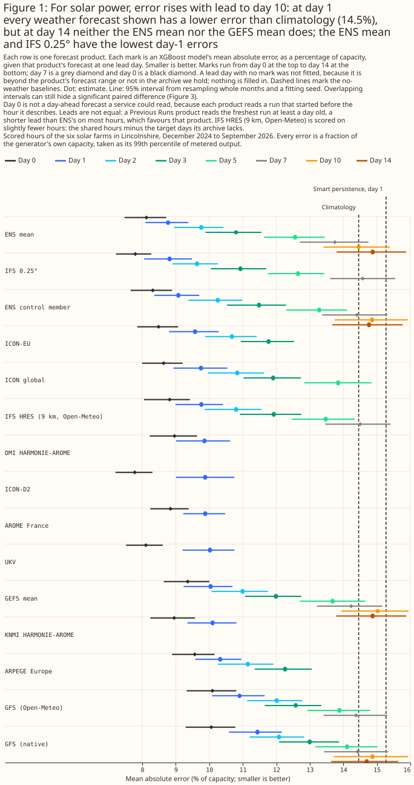
Figure 1: For solar power, error rises with lead to day 10: at day 1 every weather forecast shown has a lower error than climatology (14.5%), but at day 14 neither the ENS mean nor the GEFS mean does; the ENS mean and IFS 0.25° have the lowest day-1 errors.
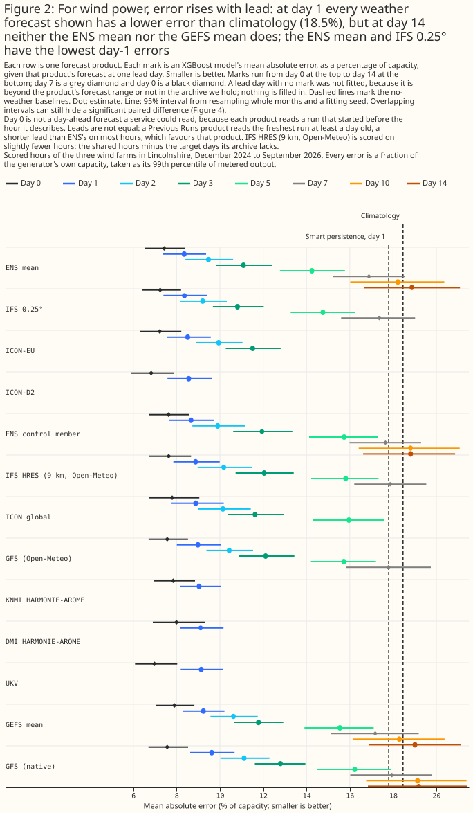
Figure 2: For wind power, error rises with lead: at day 1 every weather forecast shown has a lower error than climatology (18.5%), but at day 14 neither the ENS mean nor the GEFS mean does; the ENS mean and IFS 0.25° have the lowest day-1 errors.
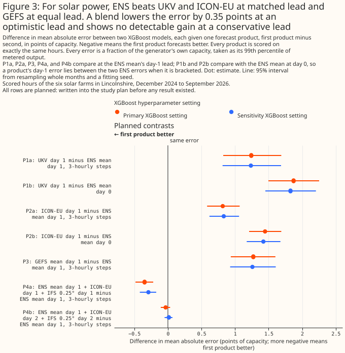
Figure 3: For solar power, ENS beats UKV and ICON-EU at matched lead and GEFS at equal lead. A blend lowers the error by 0.35 points at an optimistic lead and shows no detectable gain at a conservative lead.
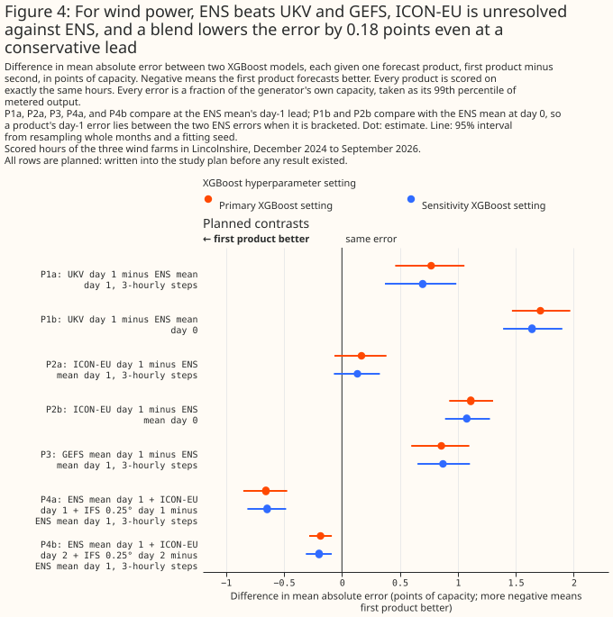
Figure 4: For wind power, ENS beats UKV and GEFS, ICON-EU is unresolved against ENS, and a blend lowers the error by 0.18 points even at a conservative lead.
How this page was made. The research question came from a human. Everything else — the code behind every result, the analysis, the figures, and the text — was written by Claude, Anthropic's AI model (for this page, Claude Opus 5, Claude Opus 5.5, and Claude Sonnet 5, with Claude Opus 5.5 and Claude Sonnet 5 also reusing shared code that Claude Opus 5 wrote). Several independent Claude reviewers have checked the method, the evidence, and the prose adversarially.
This study uses only Flexpectation's own data, and its purpose is to inform Flexpectation's choices. The study scores each weather product only at the six solar farms and three wind farms in Flexpectation's trial area in Lincolnshire. The study does not compare results across many regions or climates, so a result on this page may not hold elsewhere.
Key findings
Every finding below is about each product as this study reads it. UKV, ICON-EU, and IFS 0.25° are single deterministic runs, read through Open-Meteo at one grid point. ENS is the mean of 51 ensemble members, averaged over an H3 cell (one hexagon of the H3 global hexagonal grid). GEFS is a 31-member mean read at the nearest 0.25° cell. A finding is therefore not a ranking of the weather models that produce these forecasts.
- For solar power, ENS beats UKV, ICON-EU, and GEFS at matched lead, at both XGBoost settings (solar results).
- For wind power, ENS beats UKV and GEFS, and ICON-EU and IFS 0.25° cannot be separated from ENS (wind results).
-
IFS 0.25° is the closest rival to ENS among the individual products tested, and the lead the comparison uses favours IFS 0.25° (exploratory). IFS 0.25°'s day-1 error minus ENS's is +0.036 points [-0.225, +0.296] for solar and +0.003 points [-0.163, +0.186] for wind. IFS 0.25°'s lead is shorter than ENS's on most hours (other products).
-
Adding ICON-EU and IFS 0.25° to ENS changes the wind error by -0.184 points [-0.282, -0.087] at a lead a live service could use, and changes the solar error detectably only at a lead a live service may not be able to use. A refit of the blends on the GPU with a second shuffle seed agrees for wind, and shows that every solar control is itself worse than ENS alone (blending).
- For wind, ICON-EU at day 2 carries most of the blend's gain (exploratory, and post hoc, because the two single-product blends were fitted after the result of the planned day-2 blend was seen): ENS plus ICON-EU alone changes the error by -0.169 points [-0.250, -0.090], and the planned day-2 blend, which adds IFS 0.25° as well, is not statistically distinguishable from the ENS plus ICON-EU blend (blending).
- At the wind farms, part of ENS's advantage over the single-run products may be timing noise that averaging removes, but at the solar farms averaging does not shrink the gaps relative to ENS's own error (exploratory; gaps).
- Every day-1 weather forecast shown in Figures 1 and 2 has a lower error than the no-weather climatology baseline. The XGBoost model's error given ENS is 8.771% of capacity for solar and 8.350% for wind (GPU fits), against climatology's 14.458% and 18.460% (the XGBoost forecasts work).
- The ENS mean's error is lower than climatology's at day 7, and cannot be told apart from climatology's at day 10 or day 14 (exploratory; the day-7 solar gain lies near the 5% line and has no second-setting check). For solar, the ENS mean's error is 13.748% [12.706, 14.745] of capacity at day 7, 14.457% [13.406, 15.388] at day 10, and 14.876% [13.797, 15.870] at day 14, against climatology's 14.458% [13.205, 15.592]. For wind the errors are 16.884% [15.218, 18.527], 18.223% [16.022, 20.367], and 18.867% [16.664, 21.091], against climatology's 18.460% [16.341, 20.389]. The ENS mean minus climatology is -0.710 [-1.398, -0.064] points for solar and -1.577 [-2.713, -0.460] points for wind at day 7, and +0.418 [-0.325, +1.108] points and +0.406 [-0.571, +1.341] points at day 14 (error and lead).
- ICON-D2 read at Open-Meteo's freshest run, a served lead of 1 to 3 hours for radiation and 0 to 2 hours for wind, has the lowest wind error of any forecast fitted (6.826% of capacity), and for solar a day-0 error of 7.776%, within 0.02 points of IFS 0.25°'s day 0 (7.793%), while at day 1 ICON-D2 is mid-ranking (exploratory). ICON-D2 minus ICON-EU is -0.711 points [-0.871, -0.557] at day 0 and +0.302 points [+0.061, +0.665] at day 1 for solar (error and lead).
- Neither native GFS nor IFS HRES 9 km has an error detectably lower than the ENS mean at any lead day, and their day-1 errors are higher (exploratory). The day-1 error of native GFS is 11.438% [10.589, 12.165] of capacity for solar and 9.622% [8.625, 10.680] for wind, and of IFS HRES 9 km 9.762% [8.992, 10.406] and 8.879% [7.852, 9.993], against 8.792% and 8.379% for the ENS mean on the rows IFS HRES 9 km also has (GPU fits; 8.771% [8.096, 9.373] and 8.350% [7.373, 9.364] on all shared rows). Native GFS minus the ENS mean at day 1 is +2.667 [+2.286, +3.021] points for solar and +1.272 [+1.003, +1.516] points for wind, and IFS HRES 9 km minus the ENS mean is +0.970 [+0.762, +1.161] points and +0.500 [+0.305, +0.717] points (native GFS and IFS HRES 9 km).
- AIFS Single has a lower wind error than the ENS control member at day 1, and the solar difference is not claimable (the one AIFS contrast planned before any AIFS fit; every other AIFS result is exploratory). On the 16 months of hours that AIFS Single covers, AIFS Single minus the ENS control member, both on 6-hourly steps, is -0.581 points [-1.126, -0.150] for wind (8.334% against 8.916% of capacity) and -0.094 points [-0.426, +0.260] for solar (9.402% against 9.496%). Against the ENS mean on the same steps, AIFS Single is not better (AIFS).
- At day 7, an XGBoost model given both ENS's mean and AIFS Single has a lower solar error than one given ENS's mean alone, and the wind difference is not claimable (a deciding contrast named before the fit, not a planned one). The solar difference is -0.396 points [-0.578, -0.201] (13.901% against 14.297% of capacity). The wind difference is -0.274 points [-0.586, +0.064] (16.281% against 16.555%). At day 14 neither technology has any skill to compare, so no AIFS contrast is read (AIFS at days 7 and 14).
- The day-1 value in Open-Meteo's Previous Runs archive (Open-Meteo is a third-party service that archives past weather forecasts) gives UKV, ICON-EU, and IFS 0.25° a shorter lead than ENS's on most hours, which flatters those three products (matched leads).
Introduction
The question is which weather forecast, or blend of forecasts, gives the most accurate day-ahead power forecast at the six solar farms and three wind farms. Flexpectation's live service reads ENS at 09:00 UTC, so the answer decides whether a second weather source is worth ingesting. ENS is the incumbent. The table sets out each product a headline contrast uses, plus ICON-D2. The other products in the study are exploratory and appear in Other products, in Error and lead, in native GFS and IFS HRES 9 km, and in AIFS.
| Product | Lead at day 1, in hours after the run starts | Grid | Domain (the study reads Great Britain) | Archive read from | Delivery |
|---|---|---|---|---|---|
| ECMWF ENS, mean of 51 members | 24 + h | About 9 km native, served on 0.25° cells; the study averages the cells overlapping each generator's H3 cell | Global | 2024-04-01 | Not measured; the study assumes the 00 UTC run is readable at 09:00 UTC |
| NOAA GEFS, mean of 31 members | 24 + h | 0.25°; the study reads the nearest cell | Global | 2020-10-01 | Not measured; the study assumes the 00 UTC run is readable at 09:00 UTC |
| UKV | 24 + (h mod n) | 1.5 km over the UK, served at 2 km | UK | 2024-08-06 | About 4 hours after the run starts |
| ICON-EU | 24 + (h mod n) | 6.5 km, served at about 7 km | Europe | 2024-01-19 | About 3.5 hours after the run starts |
| ICON-D2 (exploratory only) | 24 + (h mod n) | 2.2 km, served at about 2 km | Germany and neighbouring countries, not all of Great Britain | 2024-01-19 | About 1.5 hours after the run starts |
| IFS 0.25° | 24 + (h mod n) | About 9 km native, served at 0.25° | Global | 2024-03-06 | Not measured |
IFS 0.25° is the open-data 0.25° version of ECMWF's single high-resolution forecast run (HRES), not a member of ENS.
ICON-D2 covers Germany and neighbouring countries, ICON's 100 m wind is a derived value, and ENS at a generator is a smoothed mean. ICON-D2 is the German weather service's 2.2 km ICON configuration for Germany and neighbouring countries. ICON-EU's, ICON-D2's, and ICON global's served "100 m" wind speed is Open-Meteo's derivation, the 120 m speed multiplied by about 0.98, and not a product of the German weather service. ENS at a generator is the mean of the 0.25° grid cells that overlap the generator's H3 resolution-5 hexagon (about 253 km²), weighted by overlap. That mean is a smoothed value, whereas each Previous Runs product is read at a single grid point.
In the table, h is the UTC hour of the row and n is the interval between runs of a product's weather model. ENS and GEFS start one run per day, at 00 UTC. UKV, ICON-EU, and IFS 0.25° reach the study through Open-Meteo's Previous Runs archive, whose lead depends on n (How the leads are matched). The scored rows start on 2024-12-01, after the archive start date of every product in the table. The grids, coverage, and delivery times of UKV, ICON-D2, and ICON-EU come from the past-wind study, which measured the delivery times for a different purpose. The archive start dates come from the weather-products survey. The study did not measure the delivery time of ENS, GEFS, or IFS 0.25°, and ECMWF's published dissemination schedule was not checked against the 09:00 UTC assumption.
Data and methods
How the leads are matched
Open-Meteo's Previous Runs archive is not a fixed-lead instrument, so the study cannot compare its
products with ENS at one lead. A value labelled previous_dayN comes from the freshest run of the
weather model that was initialised at least N × 24 hours before the hour it describes. For a weather
model that starts a run every n hours, the lead of that value is 24N + (h mod n) hours, where h is
the UTC hour of day. The lead therefore differs between products. No Previous Runs value reproduces
a forecast issued at a fixed time each day.
A check against GFS runs on two days supports the run-selection rule, and the same check found no clear run cycle for UKV. The study's verification script (V1) checked this run-selection rule against GFS runs on two days (2025-07-01 and 2025-07-02) at the nine generators, and the check passed. Served 100 m wind speed differed from the run initialised exactly 24N hours before the hour by a mean absolute difference of 0.102 km/h at N = 1 and 0.100 km/h at N = 2, against 0.416 and 0.515 km/h for a run one hour older. Served radiation matched a run chosen by the hour's label (a mean absolute difference of 4.96 W/m² at N = 1) better than a run chosen by the hour's start (21.94 W/m²).
The rule for every other product rests on the assumption that Open-Meteo applies one rule to every weather model. For UKV, the run-switch check (V1b) found no clear run cycle: the check's score was 1.07 for wind and 1.10 for temperature, and a cycle needs a score of 1.3. The study therefore reports, for solar, the share of hours whose rebuilt radiation value, which the next paragraph explains is built from two hourly snapshots, would straddle a run change under two assumed cycles: 33.3% at a 3-hour cycle and 16.9% at a 6-hour cycle.
UKV's hourly solar radiation is the study's own rebuild from two snapshots, so the solar gap between UKV and ENS includes the effect of that rebuild. The radiation timestamp check gave a median peak offset of -13 minutes for UKV, the offset a snapshot taken at the hour's label gives. Every other product measured -28 to -35 minutes, the offset an hour-ending mean gives. The study rebuilds UKV's hourly radiation from its hourly snapshots at offsets (-60, 0) minutes. The rebuild gives a median peak of -43 minutes, the offset of an hour-ending mean, and the timestamp check agrees with the rebuild. UKV's solar radiation is not published as an hourly mean, so the study assembles the hourly mean from two snapshots. The study chose the two offsets by the timestamp check alone. The study did not compare UKV's error under any other rebuild, so the solar gap between UKV and ENS includes the effect of this reconstruction.
If Open-Meteo fills a missing run with an older run, a row's lead can exceed the lead the rule gives, and a longer lead would weaken the upper side of the bracket. The upper side needs each product's lead to be no longer than ENS day N's. On a filled row the product's lead is longer, so its error could exceed ENS day N's because of the run's age and not because of the weather model. The V1 check compared GFS with runs on two days only, so the study cannot rule out a fill for any product.
ENS and GEFS are compared at exactly matched lead, because both are whole-run archives. Each ensemble contributes its 00 UTC run, read as though at 09:00 UTC on the run's day. A forecast for day d is the run's forecast for the calendar day d days after the run, so a row's lead is 24d + h hours for both ensembles. The study assumes both runs were readable by 09:00 UTC, which is when the live service reads its ENS run, and did not measure when either run was published. The GEFS contrast, P3, is therefore the only planned contrast whose two arms have exactly the same lead on every row.
ENS at day N−1 and at day N brackets each Previous Runs product at day N. On a row for hour h, ENS day N−1 has lead 24(N−1) + h hours, which is shorter than the product's 24N + (h mod n). ENS day N has lead 24N + h, which is at least as long. If a product's error is lower than ENS day N−1's error, the product beats ENS even though ENS had the shorter lead. If a product's error is higher than ENS day N's error, ENS beats the product even though the product's lead was no longer. The study calls the first contrast the lower side of the bracket (P1b for UKV, P2b for ICON-EU) and the second contrast the upper side (P1a and P2a). The bracket needs no knowledge of a product's run cycle n.
ENS day 0 is a bracket side only. A service issuing at 09:00 UTC cannot deliver a forecast whose early hours have already passed, so ENS day 0 is never offered as a product.
A product beats ENS, loses to ENS, or is unresolved, and a verdict stands only if both XGBoost settings give it. These three verdicts were fixed in the plan before any fit:
- Beats ENS at matched lead: the lower-side difference is negative and significant at the 5% level.
- Loses to ENS at matched lead: the upper-side difference is positive and significant at the 5% level.
- Unresolved at matched lead: neither of those two conditions holds, so the product's error lies between the two ENS errors, and the study cannot place the product's error more precisely.
"Beats" needs a product to beat ENS at day N−1, not at day 0, and "loses" is easier to reach than "beats" by construction. For a product at day N, ENS at day N−1 has a lead 24 − (h − (h mod n)) hours shorter than the product's, and ENS at day N has a lead h − (h mod n) hours longer. Averaged over the 24 UTC hours, for a product whose runs start every 6 hours, ENS at day N−1 has a lead 15 hours shorter and ENS at day N has a lead 9 hours longer. The "loses" test therefore sits closer to a matched lead than the "beats" test does, and gives ENS a smaller handicap. Both tests are conservative, but the "beats" test is the more conservative one. A product a little worse than ENS is therefore likelier to reach "loses" than a product a little better than ENS is to reach "beats".
A verdict that the two settings disagree on is unresolved, and only the planned contrasts carry headline claims. The page shows both settings. The planned contrasts are P1a, P1b, P2a, P2b, P3, P4a and P4b (the blends of ENS with ICON-EU and IFS 0.25° at day 1 and at day 2), and the two blend guards per technology (each blend minus its permutation control). All of the planned contrasts were written into the study plan before any result existed. The split between planned and exploratory contrasts applies to the contrast tables and to the headline claims: every contrast outside the planned list is exploratory, and so is any number that a paragraph quotes from an exploratory table. Analyses added after a result was seen, such as the two single-product wind blends, are exploratory and also post hoc. About 1 in 20 exploratory intervals reaches significance at the 5% level by chance.
The bracket assumes that ENS's own error does not fall as its lead lengthens, and the study tests that assumption band by band. For each day pair the study uses (day 0 to 1, 1 to 2, and 2 to 3) and for each 3-hour band of UTC hours, the study computes the change in ENS's error. A band whose point estimate is zero or below is voided. Every bracket that rests on that day pair loses the voided band. The rule reacts to noise, because a point estimate can fall to zero or below by chance where the interval contains zero. The check tests only ENS's own error, so it does not test whether the Previous Runs archive follows the lead rule above, and it does not test any product's error at all.
The solar and wind sections give the result of this check.
The XGBoost model, the scored hours, and the folds
Every arm is the same XGBoost model given the same kinds of column, and only the weather product
differs. The XGBoost model is fitted separately for each generator with an absolute-error
objective and three fitting seeds (0, 1, and 2). Forecasts are scored out of fold. Curtailed hours
are left out of training and kept for scoring. Every prediction is held to the generator's export
cap. Column subsampling is switched off (colsample_bytree is 1), because a wider arm otherwise
wins without carrying more information. Each single-product arm has seven columns:
- Solar: hour of day, day of year, an era code, the sun's elevation and azimuth, and the product's global horizontal irradiance and 2 m air temperature at its own lead.
- Wind: hour of day, day of year, an era code, and the product's wind speed at 100 m, the sine and cosine of its 100 m wind direction, and its 10 m wind speed at its own lead.
A blend has more columns than a single-product arm, so each blend has a control with the same column count. The solar blend has 11 columns and the wind blend has 15. ENS's columns stay real in the control. Each other product's weather columns are replaced by values shuffled among the hours that share a generator, a year-month (a calendar month of one year, such as 2025-03), and a UTC hour of day, so no shuffled value crosses a fold. A wind product's direction sine and cosine move together under one shuffle, and every other column is shuffled separately. The blend minus its control separates the effect of the other products' weather from the effect of the extra columns.
Scoring is on the same hours for every arm, except IFS HRES 9 km and the AIFS arms. Every other arm is scored on the rows where the target, the no-weather baselines, and every planned product are present. IFS HRES 9 km loses the target days its archive lacks, and the AIFS arms have rows of their own (the extra arms and How AIFS is read). A row is one hour at one generator. Solar has 39,030 candidate rows from 2024-12-01 and 35,263 shared rows. Wind has 42,144 candidate rows and 37,407 shared rows.
Requiring a UKV day-1 value removes the most rows, so the shared rows hold little of spring 2026 (Limitations gives the counts).
Exploratory arms other than IFS HRES 9 km and the AIFS arms are fitted on the same rows with their few missing values left as missing, which XGBoost handles natively (Limitations gives the shares).
The shared rows cover 21 year-months.
Folds are whole months, cut inside three eras, and the study prints which months no fold can
cover. The eras end at 2025-10-01 and at the Met Office's UKV upgrade on 2026-01-21. The part
month around the upgrade is dropped. Five folds of whole months are cut inside each era. The third
era's folds are rotated by three fold positions (NWP_ERA_FOLD_OFFSETS = {0: 0, 1: 0, 2: 3}) so
that no calendar month is held out of every era at once. A rotation of 3 is the first rotation
search_fold_offsets returns that covers every month in both technologies. search_fold_offsets
reads only which hours exist and ran before any XGBoost model was fitted, so no forecast error
informed the rotation. The 2025-10-01 cut comes from the shared fold helper and is harmless here.
IFS Cycle 50r1 (2026-05-12) is not an era cut.
Every arm gets the same era code. Of 124 solar (site, fold, month) cells, 20 are not covered by training, and of 63 wind cells, 9 are not covered. Every uncovered cell is a calendar month that occurs in one year only at that site, so no other fold holds that month and training never sees the season.
Every error is divided by its own generator's capacity before any mean or difference, and every
interval resamples whole year-months. Capacity is the generator's effective_capacity_mw, its
99th percentile of metered output, as defined on the blending
page. Each of 2,000 resamples draws whole
year-months, and one of the three fitting seeds, paired across the two arms of a contrast. Each
contrast asserts that both arms hold the same rows. The XGBoost model is fitted at two
hyperparameter settings, called primary and sensitivity. The page shows the sensitivity setting for
every planned contrast, for the exploratory results that decide whether a planned contrast is
informative (the permutation controls against ENS alone, and the check that ENS's error rises with
lead), and for any exploratory result near the 5% line, meaning a result with a 95% interval bound
within 20% of the interval's width from zero. Every other exploratory result is shown at the primary
setting only. The extra lead-day and day-0 arms below have no sensitivity fit, so about 40 of their
results that lie near the 5% line have no second-setting check. Among them are the ENS mean's gain
over climatology at day 7 for solar (-0.710 [-1.398, -0.064]), IFS 0.25° minus ENS at day 5 for
wind, and ICON-D2 minus ICON-EU at day 1 for solar.
The extra lead days, day 0, and the products added later
The extra arms are fitted on a graphics processing unit (GPU), in four batches, and every one is exploratory. Each extra arm is the same XGBoost model given one product's forecast, at the primary setting only, on the same shared rows, folds, and eras as every other arm, except that IFS HRES 9 km loses its gap days (below) and the AIFS arms have rows of their own (How AIFS is read). The batches are:
- Batch 1: the ENS mean at days 5, 10, and 14; the ENS control member at day 0; the GEFS mean at days 0, 5, 10, and 14; IFS 0.25° and GFS (Open-Meteo) at days 0, 5, and 7; ICON global at days 0 and 5; and every other Previous Runs product at day 0.
- Batch 2: the ENS mean and the GEFS mean at day 7, the ENS control member at days 2, 3, 5, 7, 10, and 14, and GPU refits of the published arms that batch 1 left on the CPU.
- Batch 3: GFS (native) at days 0, 1, 2, 3, 5, 7, 10, and 14.
- Batch 4: IFS HRES 9 km at days 0, 1, 2, 3, 5, and 7.
Each product has the lead days below, and the horizons in this table come from public specifications that the study did not confirm. Where the archive holds no value, the table gives the share of hours with a value.
| Product | Lead days fitted | Days not fitted, and why |
|---|---|---|
| ENS mean, ENS control member, GEFS mean, and GFS (native) | 0, 1, 2, 3, 5, 7, 10, and 14 | Days 4, 6, 8, 9, and 11 to 13 were not fitted. Each of these products reaches day 14. |
| IFS 0.25° and GFS (Open-Meteo) | 0, 1, 2, 3, 5, and 7 | Days 4 and 6 were not fitted. Open-Meteo's Previous Runs archive stops at day 7, so days 10 and 14 are not in the archive. |
| IFS HRES 9 km (Open-Meteo Single Runs) | 0, 1, 2, 3, 5, and 7 | Days 4, 6, 8, and 9 were not fitted. The runs end at lead 240 hours, so day 10 is beyond the runs. |
| ICON global | 0, 1, 2, 3, and 5 | Days 4 and 6 were not in archive. Day 7 is 0% non-null in the archive, so day 6 is the last day with values. |
| ICON-EU | 0, 1, 2, and 3 | Day 4 was not in archive. Day 5 is 0% non-null in the archive, so day 4 is the last day with values. |
| ARPEGE Europe (solar only) | 0, 1, 2, and 3 | Beyond the product's horizon from day 4. |
| UKV | 0 and 1 | Day 2 is 0% non-null in the archive, and the study could not verify UKV's horizon locally. |
| ICON-D2, AROME France (solar only), DMI HARMONIE-AROME, and KNMI HARMONIE-AROME | 0 and 1 | Beyond the product's horizon from day 2. |
Day 0 reads the freshest run that covers each hour, and its served lead is checked for only ICON-EU and ICON-D2, and only for radiation. The past-weather studies matched ICON-EU's served radiation to ICON's own files within 1 W/m² at 9 of 9 hours (one day, one place). For ICON-D2 the freshest run was the closest match at 7 of 9 hours, and differed by up to 44 W/m². The wind lead of 0 to 2 hours for both products is inferred from where the hour-to-hour jumps of the served series fall and from the 3-hourly run cycle, and the radiation lead is 1 to 3 hours. This study's day-0 series for the two products equals those studies' series on every shared hour (the largest absolute difference is 0.0000). The day-0 lead of every other Previous Runs product is estimated from the product's own run cycle, not measured. ENS, GEFS, and IFS HRES 9 km read the 00 UTC run of the hour's own day at day 0, so their day-0 marks cover hours before that run is published. GFS (native) reads the freshest of four runs a day, at a lead of 1 to 6 hours for solar and 0 to 5 hours for wind, which ignores the hours GFS takes to publish a run.
GFS (native) reads Dynamical.org's store of NOAA's GFS at each generator's nearest 0.25° cell, and differs from GFS (Open-Meteo) in its source, run cycle, and lead. The store holds four runs a day (00, 06, 12, and 18 UTC), with hourly leads to 120 hours and 3-hourly leads after. Day N of 1 or more reads the 00 UTC run issued N days before the hour's own day, at ENS's own leads. The store's radiation is the mean since the last 6-hourly reset, and the build converts it to the mean over each hour, or over each 3 hours after lead 120 hours. Days 5, 7, 10, and 14 lie on 3-hourly leads and are upsampled to hourly as the ENS and GEFS arms are.
IFS HRES 9 km is Open-Meteo's Single Runs archive of ECMWF's IFS HRES on its native O1280 grid,
the same forecasting system as IFS 0.25° on a finer grid. The archive (ecmwf_ifs, on ECMWF's
O1280 grid) holds one 00 UTC run a day, with hourly leads 0 to 240 hours. Day N reads the 00 UTC run
issued N days before the hour's own day, at ENS's own leads. The archive publishes every 3 hours
after lead 90 and every 6 hours after lead 144, and Open-Meteo interpolates those steps to hourly,
so the hourly values at days 5 and 7, and at the last hours of day 3, are interpolated. Radiation is
clipped at zero (the archive holds 244 values below zero, the lowest -1.0 W/m²), and wind is the
served speed and the sine and cosine of the served direction. Each solar generator reads its nearest
cell and each wind generator its nearest land cell, and sites B and D share a source cell and carry
identical series. Open-Meteo's processing of HRES was not checked against a native archive. IFS
Cycle 50r1 began on 2026-05-12, inside the span, and these arms add no era feature, so the shared
rows' era code has no boundary at that date.
IFS HRES 9 km is scored on the shared hours minus the target days its archive lacks. The archive holds 919 of 926 run days, so seven run days are absent. Those gap days are never filled from another run. The six solar arms score 34,751 to 34,786 rows, and the six wind arms 36,957 to 37,008, against 35,263 and 37,407 shared rows. Every contrast that involves IFS HRES 9 km is computed on the rows both arms score, from the existing out-of-fold errors with no refit of the other arm, whose training rows included the gap days. Dropping the gap days of the day-1 arm moves the ENS mean's day-1 error from 8.771% to 8.792% for solar (+0.022 points) and from 8.350% to 8.379% for wind (+0.029 points).
Part of the rise in ENS's and GEFS's error with lead may come from coarser time steps. ENS
serves 6-hour steps beyond 144 hours and GEFS beyond 240 hours. ENS at days 7, 10, and 14 and GEFS
at days 10 and 14 therefore fall on 6-hour steps, and ENS at day 5 touches a 6-hour step only in the
margin its upsampling reads beyond lead 144. Part of the rise in the error of those arms with lead
may come from the coarser steps and not only from an older run. verify_extra_leads.py checked,
before the build, that GEFS's radiation beyond 240 hours is a 6-hour window mean.
Every mark in Figures 1 and 2 is a GPU fit, and a GPU fit is not bit-identical to a central processing unit (CPU) fit. Every contrast among the extra arms therefore uses reference arms (the arms each contrast subtracts) refitted on the same device. The device noise floor is the difference between a GPU refit and the published CPU fit of the same arm. For solar it lies between -0.024 and +0.014 points, and every interval includes zero. For wind every point estimate is negative, between -0.090 and -0.040 points, and one difference, ICON-EU at day 3 (-0.079 points [-0.167, -0.005]), is statistically significant at the 5% level. A wind mark from a GPU fit may therefore sit slightly below where a CPU fit would put it. A GPU fit repeats itself: the 23 solar arms and 23 wind arms that both an earlier GPU run and batch 1 fitted have identical per-row errors, to 0.0 on every row (a comparison of the two runs' saved losses that no committed script prints). The published headline contrasts, the blends, and the per-generator contrasts (Figures 3, 4, and 7 to 10) rest on the CPU fits of the published run.
The ENS numbers at the extra leads are not comparable with the ENS horizons study. Days 5, 7, 10, and 14 of ENS, and ICON's day 0, use this study's rows, which start after the IFS Cycle 49r1 change. The ENS numbers here are therefore not comparable with the ENS horizons study, whose ENS rows span that change.
How AIFS is read
AIFS is read at the same lead as ENS, on 6-hourly steps. For a target hour on UTC day D, the
day-d band reads the 00 UTC run of day D minus d, so the lead is 24d plus the hour, at days 1
and 2. AIFS Single and AIFS ENS serve one value every 6 hours, where ENS serves one every 3 hours to
144 hours, so an XGBoost model given ENS at full resolution would be favoured by its finer steps
alone. The like-for-like references are therefore ENS's control member (against AIFS Single) and
ENS's mean (against AIFS ENS's mean), both averaged to the same 6-hourly steps. Hourly IFS 0.25° is
a one-sided reference, because its hourly steps and its shorter lead both favour IFS 0.25°. The
positive control is ENS's mean on 6-hourly steps minus ENS's mean on 3-hourly steps, which should be
positive: it is +0.243 points [+0.153, +0.332] for solar and +0.321 points [+0.206, +0.419] for
wind.
AIFS Single's radiation is a 6-hour mean that ends at the lead, and its wind is instantaneous. Against ERA5, the mean absolute difference of AIFS Single's radiation from ERA5's 6-hour mean is smallest, at 16.36 W/m², when the window ends at the lead (39.55 W/m² one hour earlier and 37.97 W/m² one hour later). The correlation of AIFS Single's 100 m wind speed with ERA5's instantaneous 100 m wind speed is highest, at 0.9422, at the same hour. The units and the grid orientation also passed their checks.
Every AIFS arm reads the same spatial average that ENS reads. Each generator's value is the mean of the 0.25° cells under its H3 resolution-5 hexagon, weighted by overlap. A nearest-cell AIFS Single arm shows how far the spatial read moves the result.
AIFS arms have rows of their own. AIFS Single carries radiation and 100 m wind from the
2025-02-24 06 UTC run, and AIFS ENS from 2025-07-02, so neither covers the hours every other product
is scored on. The single row set holds the hours whose 00 UTC run is inside one AIFS Single
version, and the ens row set is the part of that AIFS ENS also covers. Every arm on a row set is
scored on the same hours, and the study fits the reference arms again on each row set. The
Dynamical.org store carries no model-version marker, so the study assigns each run to a version by
its run date, taken from ECMWF's release pages. Folds are cut inside each version era, and the
months that hold a version switch (2025-08 and 2026-05) are dropped. The single row set holds
28,570 solar rows and 28,873 wind rows over 16 months, and the ens row set holds 16,911 solar rows
and 18,555 wind rows over 11 months. The ens row set starts in 2025-09, because July 2025 would
form a one-month version era. Each AIFS arm has the same seven columns as an ENS arm.
One contrast was planned before any AIFS fit: AIFS Single against ENS's control member at day 1,
for solar and for wind. The contrast is called the deciding contrast. The study also refits it at
the sensitivity setting, without day of year in either arm, and at a 97.5% interval (a Bonferroni
correction across solar and wind), and drops each month in turn. The AIFS ENS contrasts are
descriptive only, because about 84% of the scored (generator, fold, calendar month) cells of the
ens row set have no training row of their calendar month (55 of 65 solar cells and 27 of 33 wind
cells). Every other AIFS number is exploratory and post hoc. Every AIFS fit is on the GPU.
The conventions of AIFS Single's radiation and wind were checked at days 1 and 2 only. The
script verify_aifs_steps.py compares AIFS Single with ERA5 at several offsets to find the hour at
which each field is stamped. At days 7 and 14 the check fails, because AIFS Single's correlation
with ERA5's wind speed is only 0.43 at day 7 and 0.15 at day 14, so an offset test cannot tell one
offset from another. The checks pass at days 1 and 2, and the wiring check, which compares the built
columns with the raw store, passes at every day. This study therefore assumes, and did not check,
that the same radiation window and wind reading hold at days 7 and 14.
AIFS Single is also read at days 7 and 14, and blended with ENS's mean at days 1, 2, 7, and 14.
Days 7 and 14 read the 00 UTC run 7 and 14 days before the hour's own day, at ENS's own leads, so
the ENS control member and the ENS mean are natively 6-hourly there and share AIFS Single's steps.
A row is dropped when its run lies outside the AIFS version era of its hour. That drops 362 solar
and 454 wind hours at day 7 and 1,121 and 1,433 at day 14. The single row set then holds 28,208
solar and 28,419 wind rows at day 7, and 27,449 and 27,440 at day 14, all over 16 months. A blend
gives one XGBoost model ENS's mean and AIFS Single's forecast at the same day. A solar blend has 9
columns and a wind blend 11, against 7 for ENS's mean alone, so the study also fits two controls
with the blend's number of columns. The blend's control shuffles AIFS Single's weather
among hours of the same generator, year-month, and hour of day, and the mirror control shuffles
ENS's mean instead. Because two shuffles of the same weather can differ (see the
AIFS section),
a shuffled arm's interval may understate the noise. The blends fit and the P4 second-seed refit
below were fitted on the GPU.
Four contrasts per technology are deciding contrasts, and the page does not call them planned. Each was named before the fit of this section, but after the day-1 and day-2 AIFS results and the ENS results at days 7 and 14 were known. They are:
- H7 and H14: AIFS Single minus the ENS control member at day 7 and at day 14.
- B7 and B14: the blend of ENS's mean and AIFS Single minus ENS's mean alone at day 7 and at day 14, with the blend minus its control as the guard.
A deciding contrast is claimable only if its interval is statistically significant at the 5% level at both hyperparameter settings with the same sign, and every dropped month keeps the sign. For H7 and H14 the refit without day of year in either arm must also agree in sign. For B7 and B14 the guard must also be statistically significant at both settings. The report also prints each deciding contrast at 99.375%, the Bonferroni level across the eight deciding contrasts (four per technology). Every other contrast in the section is exploratory and post hoc, and AIFS ENS rows are descriptive.
A day-14 reading rule decides whether there is any skill to compare at day 14. Skill exists at day 14 only if AIFS Single or the ENS control member has an error that is statistically significantly below both shuffled-AIFS arms (two seeds, primary setting, 95% interval). Where the rule finds no skill, the page does not read H14 or B14, and prints their intervals only for completeness. A second reading rule applies beside H7 and H14: AIFS Single having a lower error than the control member but not than the ENS mean is consistent with smoothing, and is not described as a better weather forecast.
Results
The XGBoost models track measured output, and every day-1 weather forecast beats climatology
The XGBoost models track the measured output at every farm, so contrasts of a few tenths of a point are contrasts between working forecasts. Figure 5 shows out-of-fold day-1 forecasts given ENS against the measured output at all six solar farms, and Figure 6 shows the same for the three wind farms. Each figure covers one week, chosen by a stated rule from the measured output alone. For solar, the rule takes the week whose daily mean output varies most from day to day. For wind, the rule takes the week with the largest mean hour-to-hour change in output. Only weeks in which every generator has scored hours on all seven days qualify.
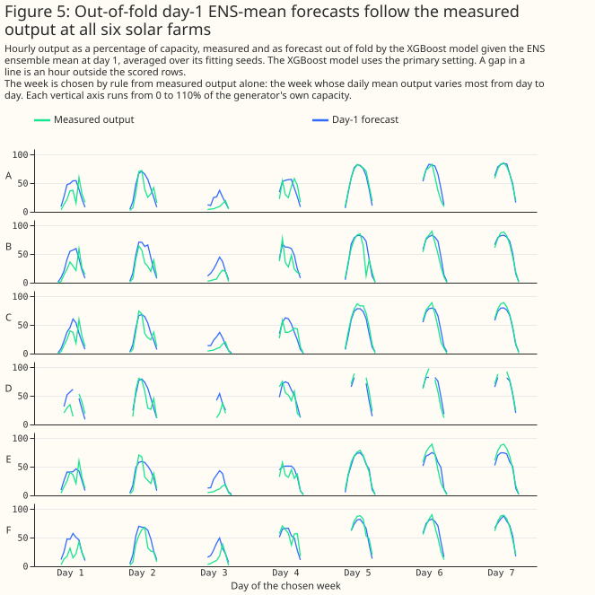
Figure 5: Out-of-fold day-1 ENS-mean forecasts follow the measured output at all six solar farms.
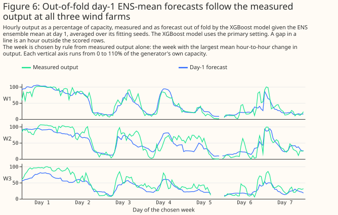
Figure 6: Out-of-fold day-1 ENS-mean forecasts follow the measured output at all three wind farms.
At day 1, an XGBoost model given ENS beats climatology by a wide margin. Given ENS's day-1 mean, the error is 8.766% of capacity [8.096, 9.355] for solar and 8.427% [7.444, 9.503] for wind. The climatology baseline scores 14.458% [13.205, 15.592] for solar and 18.460% [16.341, 20.389] for wind. Climatology is the median output at each generator for each calendar month and hour of day over the training folds.
Persistence baselines do no better than climatology on solar, and smart persistence (the last day's clear-sky index applied to clear-sky irradiance for solar, persistence blended with climatology for wind) beats climatology on wind (exploratory). Smart persistence at day 1 scores 15.274% [14.251, 16.272] on solar and 17.799% [15.824, 19.614] on wind. Smart persistence's error minus climatology's is +0.816 points [+0.040, +1.609] on solar and -0.662 points [-0.946, -0.390] on wind.
A baseline for a day-1 to day-3 forecast reads only telemetry up to 09:00 UTC on the run's day, the
same information the live service has. A baseline for the run's own day (day 0) reads telemetry only
up to the run's 00 UTC initialisation time. Figures 1 and 2 draw climatology and day-1
smart persistence only. Solar persistence on the run's own day (persistence_day0) would repeat the
last observed hour, a night-time value near zero, across the whole day.
Overlapping intervals in Figures 1 and 2 do not mean two products are equal. The errors of all the products rise and fall together from month to month, and pairing the two arms of a contrast cancels that shared swing. The paired differences in Figures 3 and 4 are the test of which gaps are statistically significant.
Figures 1 and 2 favour the Previous Runs products, because their day-1 leads are shorter than ENS's on most hours. Only GEFS has ENS's exact lead on every row. UKV, ICON-EU, IFS 0.25°, and the other products from Open-Meteo's Previous Runs archive have a lead of 24 + (h mod n) hours, against ENS's 24 + h. IFS 0.25° day 1 can also come from a newer ECMWF run than ENS's 00 UTC run. The ordering of those products against ENS in Figures 1 and 2 is therefore not an ordering at equal lead.
Error rises with lead, and from day 10 the ENS mean is no better than climatology (exploratory)
Every product's error rises with lead, up to day 10 where a product is fitted that far, the ENS mean's error is lower than climatology's at day 7, and from day 10 the ENS mean's error cannot be told apart from climatology's. Every mark in this section is a GPU fit. For solar, the XGBoost model given the ENS mean has an error of 8.771% [8.096, 9.373] of capacity at day 1, 12.560% [11.639, 13.448] at day 5, 13.748% [12.706, 14.745] at day 7, 14.457% [13.406, 15.388] at day 10, and 14.876% [13.797, 15.870] at day 14, against climatology's 14.458% [13.205, 15.592]. For wind the errors are 8.350% [7.373, 9.364], 14.251% [12.774, 15.777], 16.884% [15.218, 18.527], 18.223% [16.022, 20.367], and 18.867% [16.664, 21.091], against climatology's 18.460% [16.341, 20.389]. Paired with climatology, the ENS mean is -0.710 [-1.398, -0.064] points for solar and -1.577 [-2.713, -0.460] points for wind at day 7, so the study shows a gain over climatology at day 7. At day 10 the differences are -0.001 [-0.556, +0.531] and -0.238 [-1.315, +0.812], and at day 14 they are +0.418 [-0.325, +1.108] and +0.406 [-0.571, +1.341], so the study shows neither a gain nor a loss at those leads. The day-14 wind marks may sit 0.04 to 0.09 points below where a CPU fit would put them, a difference that would change neither conclusion.
No product fitted at day 10 or day 14 has an error that can be told apart from climatology's. The table gives every arm fitted at those leads, and the ENS mean and GEFS at day 7 for comparison.
| Exploratory: arm minus climatology (points, primary) | Solar | Wind |
|---|---|---|
| ENS mean, day 7 | -0.710 [-1.398, -0.064] | -1.577 [-2.713, -0.460] |
| GEFS mean, day 7 | -0.224 [-0.906, +0.396] | -1.286 [-2.508, -0.183] |
| ENS mean, day 10 | -0.001 [-0.556, +0.531] | -0.238 [-1.315, +0.812] |
| GEFS mean, day 10 | +0.569 [-0.148, +1.193] | -0.172 [-1.137, +0.738] |
| ENS control member, day 10 | +0.398 [-0.346, +1.022] | +0.342 [-0.790, +1.445] |
| GFS (native), day 10 | +0.409 [-0.291, +1.031] | +0.669 [-0.203, +1.641] |
| ENS mean, day 14 | +0.418 [-0.325, +1.108] | +0.406 [-0.571, +1.341] |
| GEFS mean, day 14 | +0.416 [-0.231, +1.026] | +0.550 [-0.353, +1.414] |
| ENS control member, day 14 | +0.307 [-0.471, +0.992] | +0.349 [-0.511, +1.140] |
| GFS (native), day 14 | +0.238 [-0.431, +0.825] | +0.724 [-0.225, +1.623] |
The error of the ENS mean, the ENS control member, GEFS, and native GFS rises in every step from day 5 to day 10, with one exception, and by day 14 the rise has stopped for most of them. For solar, native GFS's day 7 minus day 5 is +0.311 [-0.075, +0.701] points, the one step whose interval includes zero. From day 10 to day 14 the ENS mean's solar error and GEFS's wind error still rise, and every other arm's error does not rise detectably.
| Exploratory: day 14 minus day 10, same product (points, primary) | Solar | Wind |
|---|---|---|
| ENS mean | +0.419 [+0.090, +0.714] | +0.644 [-0.008, +1.292] |
| GEFS mean | -0.153 [-0.422, +0.105] | +0.722 [+0.193, +1.273] |
| ENS control member | -0.091 [-0.309, +0.115] | +0.007 [-0.763, +0.727] |
| GFS (native) | -0.171 [-0.431, +0.069] | +0.055 [-0.291, +0.384] |
The ENS control member has a higher error than the ENS mean at every fitted day from 0 to 10, and the two cannot be told apart at day 14. The ENS control member is one run of the ensemble at the ENS mean's own lead, so the difference measures what averaging the members adds. The day-1 difference is in Part of ENS's advantage is ensemble averaging and timing.
| Exploratory: ENS control member minus ENS mean (points, primary) | Solar | Wind |
|---|---|---|
| Day 0 | +0.190 [+0.111, +0.267] | +0.201 [+0.126, +0.282] |
| Day 2 | +0.496 [+0.303, +0.698] | +0.424 [+0.255, +0.601] |
| Day 3 | +0.687 [+0.401, +0.991] | +0.854 [+0.606, +1.130] |
| Day 5 | +0.721 [+0.297, +1.217] | +1.487 [+1.028, +1.891] |
| Day 7 | +0.656 [+0.292, +0.998] | +0.764 [+0.155, +1.485] |
| Day 10 | +0.399 [+0.079, +0.716] | +0.580 [+0.210, +0.968] |
| Day 14 | -0.110 [-0.329, +0.108] | -0.057 [-0.575, +0.377] |
GEFS has a higher error than the ENS mean at days 5, 7, and 10 for solar and at day 5 for wind, and cannot be told apart from the ENS mean at any other of the days 5 to 14 fitted. GEFS and ENS have the same lead on every row. GEFS minus ENS is +1.118 [+0.704, +1.569] points for solar and +1.290 [+0.804, +1.791] points for wind at day 5, +0.487 [+0.174, +0.820] and +0.290 [-0.496, +1.119] at day 7, +0.569 [+0.318, +0.810] and +0.065 [-0.432, +0.518] at day 10, and -0.002 [-0.284, +0.256] and +0.143 [-0.323, +0.560] at day 14.
At day 5, IFS 0.25° cannot be told apart from ENS for solar and is worse than ENS for wind, although its lead is shorter than ENS's on most hours. IFS 0.25° minus ENS at day 5 is +0.088 [-0.377, +0.575] points for solar and +0.507 [+0.081, +0.937] points for wind.
Solar, mean absolute error in % of capacity (primary setting). Every cell is a GPU fit, and each 95% interval is in the batch reports and in Figure 1. IFS HRES 9 km cells are scored on the shared hours minus the target days its archive lacks, and the other rows use every shared hour. "Not in archive" marks a lead day that the archive we hold does not carry, and "beyond horizon" marks a lead day past the product's forecast range:
| Product | Day 0 | Day 1 | Day 2 | Day 3 | Day 5 | Day 7 | Day 10 | Day 14 |
|---|---|---|---|---|---|---|---|---|
| ENS mean | 8.125 | 8.771 | 9.759 | 10.797 | 12.560 | 13.748 | 14.457 | 14.876 |
| IFS 0.25° | 7.793 | 8.815 | 9.633 | 10.930 | 12.648 | 14.577 | not in archive | not in archive |
| ENS control member | 8.315 | 9.076 | 10.255 | 11.484 | 13.281 | 14.404 | 14.856 | 14.765 |
| ICON-EU | 8.487 | 9.575 | 10.677 | 11.770 | not in archive | not in archive | not in archive | not in archive |
| ICON global | 8.637 | 9.752 | 10.834 | 11.904 | 13.846 | not in archive | not in archive | not in archive |
| IFS HRES 9 km (Open-Meteo) | 8.816 | 9.762 | 10.801 | 11.925 | 13.475 | 14.505 | beyond horizon | beyond horizon |
| DMI HARMONIE-AROME | 8.962 | 9.856 | beyond horizon | beyond horizon | beyond horizon | beyond horizon | beyond horizon | beyond horizon |
| ICON-D2 | 7.776 | 9.877 | beyond horizon | beyond horizon | beyond horizon | beyond horizon | beyond horizon | beyond horizon |
| AROME France | 8.841 | 9.879 | beyond horizon | beyond horizon | beyond horizon | beyond horizon | beyond horizon | beyond horizon |
| UKV | 8.108 | 10.019 | not in archive | not in archive | not in archive | not in archive | not in archive | not in archive |
| GEFS mean | 9.357 | 10.039 | 10.993 | 11.987 | 13.679 | 14.234 | 15.027 | 14.874 |
| KNMI HARMONIE-AROME | 8.952 | 10.099 | beyond horizon | beyond horizon | beyond horizon | beyond horizon | beyond horizon | beyond horizon |
| ARPEGE Europe | 9.566 | 10.325 | 11.151 | 12.262 | beyond horizon | beyond horizon | beyond horizon | beyond horizon |
| GFS (Open-Meteo) | 10.094 | 10.902 | 12.011 | 12.579 | 13.884 | 14.378 | not in archive | not in archive |
| GFS (native) | 10.061 | 11.438 | 12.081 | 12.996 | 14.112 | 14.423 | 14.867 | 14.696 |
Wind, mean absolute error in % of capacity (primary setting). Every cell is a GPU fit, and each 95% interval is in the batch reports and in Figure 2. ARPEGE Europe and AROME France have no wind arm:
| Product | Day 0 | Day 1 | Day 2 | Day 3 | Day 5 | Day 7 | Day 10 | Day 14 |
|---|---|---|---|---|---|---|---|---|
| ENS mean | 7.426 | 8.350 | 9.473 | 11.089 | 14.251 | 16.884 | 18.223 | 18.867 |
| IFS 0.25° | 7.241 | 8.363 | 9.205 | 10.815 | 14.758 | 17.362 | not in archive | not in archive |
| ICON-EU | 7.224 | 8.516 | 9.946 | 11.515 | not in archive | not in archive | not in archive | not in archive |
| ICON-D2 | 6.826 | 8.562 | beyond horizon | beyond horizon | beyond horizon | beyond horizon | beyond horizon | beyond horizon |
| ENS control member | 7.627 | 8.669 | 9.897 | 11.943 | 15.738 | 17.647 | 18.803 | 18.809 |
| IFS HRES 9 km (Open-Meteo) | 7.636 | 8.879 | 10.179 | 12.047 | 15.810 | 17.864 | beyond horizon | beyond horizon |
| ICON global | 7.799 | 8.882 | 10.142 | 11.626 | 15.956 | not in archive | not in archive | not in archive |
| GFS (Open-Meteo) | 7.568 | 8.988 | 10.430 | 12.110 | 15.724 | 17.786 | not in archive | not in archive |
| KNMI HARMONIE-AROME | 7.841 | 9.043 | beyond horizon | beyond horizon | beyond horizon | beyond horizon | beyond horizon | beyond horizon |
| DMI HARMONIE-AROME | 7.995 | 9.110 | beyond horizon | beyond horizon | beyond horizon | beyond horizon | beyond horizon | beyond horizon |
| UKV | 6.979 | 9.136 | not in archive | not in archive | not in archive | not in archive | not in archive | not in archive |
| GEFS mean | 7.899 | 9.241 | 10.626 | 11.781 | 15.541 | 17.174 | 18.288 | 19.010 |
| GFS (native) | 7.567 | 9.622 | 11.117 | 12.798 | 16.233 | 17.946 | 19.129 | 19.184 |
ICON-D2's day-0 marks are the lowest wind error in Figure 2 and tie with IFS 0.25°'s day 0 for the lowest solar error in Figure 1, and each product's day-0 error is lower than the same product's day-1 error. ICON's day 0 is read from the run that starts 0 to 3 hours before the hour it describes. That run is delivered about 1.5 hours (ICON-D2) or 3.5 hours (ICON-EU) after it starts, so day 0 is not a day-ahead forecast a service could read. The XGBoost model given ICON-D2's day-0 value has an error of 7.776% of capacity [7.201, 8.305] for solar and 6.826% [5.901, 7.864] for wind. ICON-EU's day-0 errors are 8.487% [7.850, 9.071] and 7.224% [6.329, 8.221]. ICON-D2 minus ENS at day 0, both fitted on the GPU, is -0.349 points [-0.496, -0.189] for solar and -0.600 points [-0.771, -0.432] for wind (exploratory). ENS at day 0 minus ICON-EU at day 0 is -0.362 points [-0.538, -0.199] for solar and +0.201 points [+0.023, +0.401] for wind, so for solar ENS's day-0 error is lower than ICON-EU's. ICON-D2 minus ICON-EU is -0.711 points [-0.871, -0.557] for solar and -0.398 points [-0.503, -0.290] for wind at day 0, against +0.302 points [+0.061, +0.665] and +0.046 points [-0.079, +0.166] at day 1 (exploratory, both GPU refits).
Day 0 minus day 1 is negative and statistically significant for every product whose difference the batch reports print. Those are 14 arms for solar and 12 for wind. The difference runs from -0.682 [-0.892, -0.462] points (GEFS) to -2.101 [-2.598, -1.686] points (ICON-D2) for solar, and from -1.042 [-1.309, -0.784] points (the ENS control member) to -2.157 [-2.433, -1.927] points (UKV) for wind. IFS 0.25°'s solar day-0 error, 7.793%, is within 0.02 points of ICON-D2's.
At day 0, ICON-D2, IFS 0.25°, and for wind UKV and ICON-EU have a lower error than the ENS mean, and the day-0 leads of every one of these products but ICON-D2 and ICON-EU are estimated, not measured. A Previous Runs product's day 0 reads the freshest run, a lead of a few hours. ENS's day 0 reads the 00 UTC run of the day, a lead of 0 to 23 hours, so the comparison favours the Previous Runs products.
| Exploratory: product at day 0 minus ENS mean at day 0 (points, primary) | Solar | Wind |
|---|---|---|
| GEFS mean | +1.233 [+0.940, +1.521] | +0.473 [+0.310, +0.620] |
| ENS control member | +0.190 [+0.111, +0.267] | +0.201 [+0.126, +0.282] |
| UKV | -0.017 [-0.266, +0.240] | -0.446 [-0.673, -0.218] |
| IFS 0.25° | -0.332 [-0.524, -0.139] | -0.184 [-0.309, -0.059] |
| GFS (Open-Meteo) | +1.969 [+1.671, +2.230] | +0.143 [-0.001, +0.276] |
| ICON global | +0.513 [+0.362, +0.662] | +0.373 [+0.073, +0.727] |
| ARPEGE Europe | +1.441 [+1.098, +1.796] | no wind arm |
| AROME France | +0.716 [+0.441, +1.001] | no wind arm |
| KNMI HARMONIE-AROME | +0.828 [+0.657, +1.002] | +0.415 [+0.179, +0.648] |
| DMI HARMONIE-AROME | +0.838 [+0.632, +1.052] | +0.569 [-0.077, +1.723] |
For solar, ICON-D2's advantage over ICON-EU at day 0 shrinks as the served lead grows; for wind the intervals overlap. For solar, ICON-D2 minus ICON-EU is -1.071 points [-1.241, -0.898] at a served lead of 1 hour, -0.599 points [-0.786, -0.428] at 2 hours, and -0.462 points [-0.670, -0.246] at 3 hours. For wind the advantage is the same at 0 and 1 hours (-0.454 points [-0.582, -0.317] and -0.454 points [-0.573, -0.336]) and smaller at 2 hours (-0.287 points [-0.413, -0.158]), but the intervals overlap. The subsets are different hours, so the study computed no paired test between served leads.
The day-0 served lead is checked for ICON-D2 and ICON-EU, radiation only, and estimated from the run cycle for every other product. ICON-D2 runs every 3 hours, so the served lead of a radiation value at label hour h is ((h-1) mod 3) + 1 hours and of a wind value h mod 3 hours. The past-weather studies checked the radiation lead against ICON's own files at 9 hours on one day and at one place, and took the wind lead from where the hour-to-hour jumps of the served series fall and from the 3-hourly run cycle.
For solar power, ENS beats UKV and ICON-EU at matched lead and GEFS at equal lead
For solar power, no product tested beats the European Centre for Medium-Range Weather Forecasts ensemble (ENS) at matched lead: UKV and ICON-EU both lose, at both XGBoost hyperparameter settings. Every difference below is the mean absolute error of an XGBoost model given the first product, minus the error of an XGBoost model given the second, in percentage points ("points") of capacity, with a 95% interval. A positive difference means the first product forecasts worse. UKV is the Met Office's UK weather model. ICON-EU is the European domain of the German weather service's ICON weather model.
A Previous Runs product cannot be given ENS's exact lead, so each product is bracketed between ENS at day 0 and ENS at day 1. How the leads are matched defines the bracket, the three verdicts, and which contrasts are planned. Every other contrast on this page is exploratory.
| Contrast (solar, points) | Primary setting | Sensitivity setting |
|---|---|---|
| P1a: UKV day 1 − ENS day 1 (upper side) | +1.242 [+0.824, +1.689] | +1.236 [+0.815, +1.686] |
| P1b: UKV day 1 − ENS day 0 (lower side) | +1.872 [+1.497, +2.252] | +1.826 [+1.451, +2.205] |
| P2a: ICON-EU day 1 − ENS day 1 (upper side) | +0.817 [+0.584, +1.069] | +0.832 [+0.619, +1.060] |
| P2b: ICON-EU day 1 − ENS day 0 (lower side) | +1.447 [+1.210, +1.689] | +1.422 [+1.174, +1.676] |
| P3: GEFS day 1 − ENS day 1 (equal lead) | +1.272 [+0.937, +1.601] | +1.259 [+0.927, +1.606] |
Both sides of both brackets are positive and significant, so UKV and ICON-EU have a higher error than ENS even at ENS's shorter day-0 lead. The verdict for each product is "loses" at the primary setting and at the sensitivity setting. At the primary setting the XGBoost model given ENS at day 1 has an error of 8.766% of capacity [8.096, 9.355], against 10.009% [9.178, 10.750] for UKV and 9.583% [8.819, 10.290] for ICON-EU. ENS at day 0 has an error of 8.137% [7.475, 8.728]. ENS at day 0 is a bracket side only, because a service issuing at 09:00 UTC cannot read a forecast for hours that have already passed.
The bracket rests on ENS's error rising with lead, and that assumption fails in one band of hours for solar power. From day 0 to day 1 the ENS error changes by -0.025 points [-0.133, +0.051] in the band 03-06 UTC at the primary setting, and by -0.019 points [-0.155, +0.106] at the sensitivity setting, so the study voids every bracket in that band. The sensitivity setting checks the day-0-to-day-1 pair only. Within that band each product's own bracket is unresolved: for UKV the lower side is -0.013 [-0.088, +0.092] and the upper side is +0.012 [-0.100, +0.145] at the primary setting (exploratory). Dropping the voided band from the rows leaves the upper sides positive: +1.261 [+0.840, +1.715] for UKV and +0.828 [+0.595, +1.075] for ICON-EU at the primary setting, from 34,735 rows. UKV's lower side is +1.901 points [+1.527, +2.284]. UKV and ICON-EU therefore still lose (exploratory). In every other band of the day-0-to-day-1 pair, the point estimate is positive at both settings. Within the day-0-to-day-1 pair, the interval is above zero in all but the band 18-21 UTC, where the change is +0.036 points [-0.062, +0.125] at the primary setting and +0.062 points [-0.048, +0.175] at the sensitivity setting. The point estimate for the band 18-21 UTC is positive, so the study does not void the band. In every band of the pairs day 1 to 2 and day 2 to 3, the point estimate is positive at the primary setting.
At equal lead the solar test of ICON-EU has too few rows to separate the products. ICON-EU's day-1 lead equals ENS day 1's on hours 00-05 UTC, but the shared solar rows in that window fall at 05 UTC only. On those 528 rows in 8 months, ICON-EU minus ENS at day 1 is +0.092 points [-0.056, +0.269] (exploratory). The verdict for ICON-EU therefore rests on the bracket.
ENS also beats GEFS, the free ensemble from the US National Oceanic and Atmospheric Administration (NOAA), at exactly equal lead. GEFS is the Global Ensemble Forecast System. GEFS and ENS have the same lead on every row, so the P3 contrast needs no bracket. The XGBoost model given the GEFS ensemble mean at day 1 has an error of 10.039% [9.234, 10.689] against 8.766% for ENS, a difference of +1.272 points [+0.937, +1.601] at the primary setting and +1.259 points [+0.927, +1.606] at the sensitivity setting.
The solar result holds at each of the six generators. The generators are labelled A to F. UKV minus ENS at day 1 (P1a) is positive and significant at every generator, from +1.087 points [+0.533, +1.649] at generator A to +1.442 points [+1.008, +1.918] at generator E. ICON-EU minus ENS at day 1 (P2a) is positive and significant at every generator too, from +0.668 points [+0.408, +0.966] at generator E to +1.075 points [+0.786, +1.375] at generator F. These contrasts are exploratory. Each interval resamples months and fitting seeds within one generator, so the interval does not cover differences between generators.
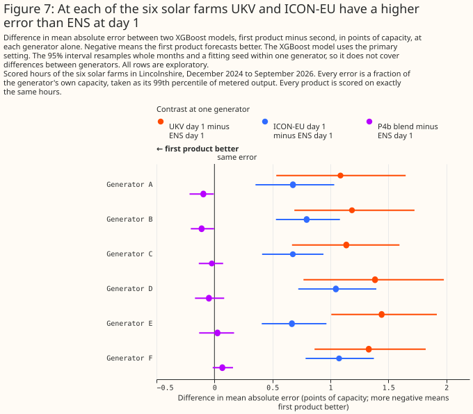
Figure 7: At each of the six solar farms UKV and ICON-EU have a higher error than ENS at day 1.
For wind power, ENS beats UKV and GEFS, and ICON-EU is unresolved against ENS
For wind power, UKV loses to ENS at matched lead, and ICON-EU is unresolved against ENS. The verdict for UKV is "loses" at both settings, and the verdict for ICON-EU is "unresolved" at both settings. The differences are defined in the solar section above, and the bracket in How the leads are matched. A positive difference means the first product forecasts worse.
| Contrast (wind, points) | Primary setting | Sensitivity setting |
|---|---|---|
| P1a: UKV day 1 − ENS day 1 (upper side) | +0.770 [+0.460, +1.057] | +0.697 [+0.371, +0.987] |
| P1b: UKV day 1 − ENS day 0 (lower side) | +1.713 [+1.467, +1.970] | +1.640 [+1.391, +1.902] |
| P2a: ICON-EU day 1 − ENS day 1 (upper side) | +0.169 [-0.064, +0.384] | +0.134 [-0.069, +0.328] |
| P2b: ICON-EU day 1 − ENS day 0 (lower side) | +1.112 [+0.926, +1.305] | +1.077 [+0.890, +1.277] |
| P3: GEFS day 1 − ENS day 1 (equal lead) | +0.858 [+0.598, +1.099] | +0.872 [+0.652, +1.105] |
ICON-EU is unresolved because its upper side includes zero while its lower side is well above zero. ICON-EU is not better than ENS at day 0 (P2b is positive and significant), and its difference from ENS at day 1 (P2a) has an interval that includes zero at both settings. The wind error of the XGBoost model given ENS at day 1 is 8.427% of capacity [7.444, 9.503] at the primary setting, against 9.197% [8.213, 10.279] for UKV and 8.595% [7.588, 9.707] for ICON-EU. ENS at day 0 has an error of 7.483% [6.566, 8.511].
For wind, ENS's error rises with lead in every band of hours, so no bracket is voided. The change from day 0 to day 1 is positive in all eight 3-hour bands at both settings, from +0.629 points [+0.331, +0.948] in the band 03-06 UTC to +1.203 points [+0.874, +1.546] in the band 15-18 UTC at the primary setting. The pairs day 1 to 2 and day 2 to 3 also have a positive point estimate in every band at the primary setting.
On hours 00-05 UTC, where the two leads are exactly equal, ICON-EU has a higher wind error than ENS (exploratory); hours 00-05 UTC are night hours, so the result need not hold for the rest of the day. ICON-EU's day-1 lead equals ENS day 1's on hours 00-05 UTC. On those 9,228 rows, ICON-EU minus ENS at day 1 is +0.540 points [+0.237, +0.840], against +0.169 points [-0.064, +0.384] over all hours. The contrast is +0.669 points [+0.378, +0.987] on the band 00-03 UTC (4,632 rows) and +0.410 points [+0.035, +0.761] on the band 03-06 UTC (4,596 rows). UKV's day-1 lead equals ENS day 1's on hour 00 UTC, where UKV minus ENS at day 1 is +1.278 points [+0.901, +1.697] on 1,540 rows. All of these contrasts are exploratory. The ICON-EU contrast on hours 00-05 UTC is positive and significant, unlike the unresolved bracket over all hours.
ENS also beats GEFS at exactly equal lead for wind. The P3 difference is +0.858 points [+0.598, +1.099] at the primary setting and +0.872 points [+0.652, +1.105] at the sensitivity setting. The GEFS error is 9.285% [8.333, 10.273] at the primary setting.
UKV has a higher error than ENS at all three wind generators in the point estimates, but the difference is statistically significant at the 5% level at only two of the three generators, and at generator W3 the difference is +0.269 points [-0.463, +0.857]. The generators are labelled W1 to W3. UKV minus ENS at day 1 (P1a) is +1.128 points [+0.819, +1.475] at generator W1 and +0.893 points [+0.640, +1.161] at generator W2. At generator W3 the difference is +0.269 points [-0.463, +0.857]. ICON-EU minus ENS at day 1 (P2a) is +0.206 points [-0.041, +0.464] at W1, +0.303 points [+0.014, +0.585] at W2, and -0.012 points [-0.358, +0.319] at W3. These contrasts are exploratory. Each interval resamples months and fitting seeds within one generator, so the interval does not cover differences between generators.
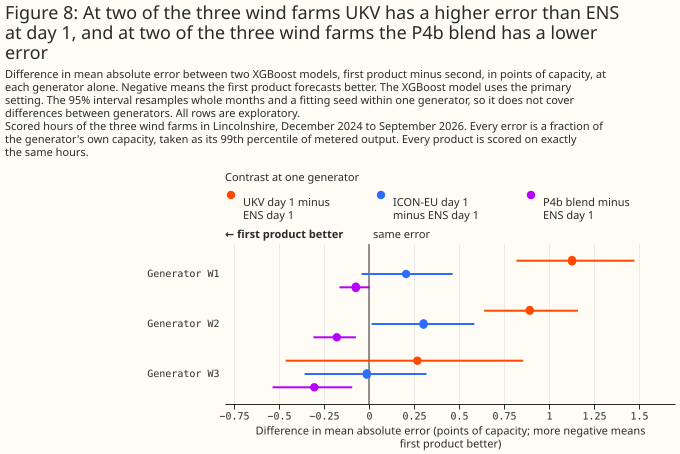
Figure 8: At two of the three wind farms UKV has a higher error than ENS at day 1, and at two of the three wind farms the P4b blend has a lower error.
A blend lowers the wind error at both leads tested, and the solar error only at an optimistic lead
A blend of ENS, ICON-EU, and IFS 0.25° lowers the wind error at both leads tested, and lowers the solar error only at the optimistic lead.
Blend P4a adds ICON-EU and IFS 0.25° at their day 1 and blend P4b at their day 2, and P4b decides the verdict because a live service could have read every value it adds. Each blend gives one XGBoost model the ENS day-1 columns plus the ICON-EU and IFS 0.25° columns. Both blends are planned. Every value P4b adds comes from a run published before the 09:00 UTC issue time. P4a's IFS 0.25° day-1 value can come from a 06, 12, or 18 UTC run. The 12 and 18 UTC runs are published after that issue time, so P4a may use weather that a live service could not have read. Each blend is compared with ENS alone at day 1, and with a permutation control that has the same columns with the two added products' weather shuffled among hours of the same generator, year-month, and UTC hour of day.
| Contrast (points) | Solar, primary | Solar, sensitivity | Wind, primary | Wind, sensitivity |
|---|---|---|---|---|
| P4a: blend − ENS day 1 | -0.347 [-0.482, -0.219] | -0.290 [-0.418, -0.174] | -0.656 [-0.851, -0.472] | -0.645 [-0.816, -0.481] |
| P4b: blend − ENS day 1 | -0.033 [-0.106, +0.033] | +0.014 [-0.049, +0.068] | -0.184 [-0.282, -0.087] | -0.197 [-0.311, -0.088] |
| P4a guard: blend − control | -0.499 [-0.612, -0.389] | -0.442 [-0.543, -0.343] | -0.604 [-0.810, -0.398] | -0.643 [-0.837, -0.450] |
| P4b guard: blend − control | -0.168 [-0.241, -0.095] | -0.136 [-0.194, -0.079] | -0.148 [-0.266, -0.026] | -0.198 [-0.317, -0.087] |
| Control P4a − ENS day 1 (exploratory) | +0.152 [+0.097, +0.215] | +0.152 [+0.097, +0.211] | -0.052 [-0.151, +0.032] | -0.001 [-0.090, +0.064] |
| Control P4b − ENS day 1 (exploratory) | +0.136 [+0.066, +0.211] | +0.150 [+0.092, +0.209] | -0.036 [-0.139, +0.048] | +0.001 [-0.094, +0.070] |
| IFS 0.25° day 1 − ENS day 1 (exploratory) | +0.036 [-0.225, +0.296] | not shown | +0.003 [-0.163, +0.186] | not shown |
For wind, the blend lowers the day-ahead error even at the conservative lead, and the guard confirms that the gain comes from the added weather. P4b is -0.184 points [-0.282, -0.087] at the primary setting and -0.197 points [-0.311, -0.088] at the sensitivity setting. P4b's guard is negative and significant at both settings. Neither wind control is significantly worse than ENS alone, so a blend that beats its control is a blend that adds real information. The wind blend verdict is "lowers the day-ahead error". At the primary setting the P4a blend has an error of 7.771% [6.839, 8.834] and the P4b blend 8.243% [7.299, 9.277], against 8.427% for ENS alone.
For solar, the blend lowers the error at the optimistic lead only, so the verdict is "may lower the error". P4a is -0.347 points [-0.482, -0.219] at the primary setting and -0.290 points [-0.418, -0.174] at the sensitivity setting. P4b, the deciding contrast, is -0.033 points [-0.106, +0.033] at the primary setting and +0.014 points [-0.049, +0.068] at the sensitivity setting, and both intervals include zero. A gain as large as 0.106 points at the primary setting is not excluded. The P4a blend has an error of 8.419% of capacity [7.727, 9.044] at the primary setting, against 8.766% for ENS alone.
The solar guard is uninformative, because each solar control is itself worse than ENS alone. A blend beats a control that is significantly worse than ENS alone whether or not the blend adds information to ENS. The P4a control is +0.152 points [+0.097, +0.215] worse than ENS at the primary setting, and the P4b control is +0.136 points [+0.066, +0.211] worse. Both controls are significantly worse at the sensitivity setting too. The P4a gain may therefore reflect newer ECMWF runs rather than a second weather model (What this study cannot separate). P4b is the deciding contrast because P4b's added runs precede 09:00 UTC. IFS 0.25° alone at day 1 does not differ detectably from ENS at day 1: +0.036 points [-0.225, +0.296] at the primary setting (exploratory). The same contrast for wind is +0.003 points [-0.163, +0.186].
Each blend covers Great Britain, and its delivery time is set by the latest run it reads. ENS, ICON-EU, and IFS 0.25° all cover Great Britain, so each blend does. P4b reads only runs published before 09:00 UTC, so the latest run it needs is ENS's 00 UTC run, which a live service can read from about 09:00 UTC. P4a's day-1 values can come from runs published after 09:00 UTC. The study did not measure when those runs are published, so P4a's delivery time is not established.
For wind, ICON-EU at day 2 carries most of the gain, and IFS 0.25° at day 2 carries a smaller share (exploratory and post hoc). The study fitted two further XGBoost models on wind only after P4b's result was seen: ENS's day-1 columns plus ICON-EU's day-2 columns, and ENS's day-1 columns plus IFS 0.25°'s day-2 columns. Each of the two post hoc XGBoost models has 11 columns, whereas P4b has 15, so equal column counts with P4b are impossible. The fair reference for each post hoc XGBoost model is ENS alone at day 1, with 7 columns. ENS plus ICON-EU differs from ENS alone by -0.169 points [-0.250, -0.090] at the primary setting. ENS plus IFS 0.25° differs from ENS alone by -0.073 points [-0.132, -0.011] at the primary setting and -0.067 [-0.128, -0.006] at the sensitivity setting; both settings are shown because the upper bound is close to zero. Against P4b, ENS plus ICON-EU is +0.015 points [-0.033, +0.065], so the study cannot distinguish ENS plus ICON-EU from P4b. ENS plus IFS 0.25° is +0.111 points [+0.035, +0.189] worse than P4b, so ENS plus IFS 0.25° reaches only part of P4b's gain. The ICON-EU permutation guard is -0.142 points [-0.217, -0.066]. The ICON-EU control is not worse than ENS alone (-0.027 [-0.081, +0.023] at the primary setting and +0.002 [-0.038, +0.036] at the sensitivity setting), so the gain comes from ICON-EU's weather.
IFS 0.25°'s small wind gain cannot be told apart from what a shuffled column gives. The IFS 0.25° permutation guard is -0.040 points [-0.138, +0.074] and -0.058 [-0.151, +0.033], and neither interval is statistically significant at the 5% level.
The study cannot say whether ICON-EU's wind gain comes from a second weather model or from reading one grid point. Two differences between the added products and ENS could account for part of the ICON-EU gain, and the study did not test either difference. Both added products are read at one grid point, whereas ENS is an average over an H3 cell. ICON-EU is also a different weather model from ENS. IFS 0.25° is ECMWF's own weather model, so an older IFS 0.25° run may act like an extra ensemble member of ENS. The study has no contrast that separates these two explanations.
Averaging over 3 hours or a day leaves the wind gain in place, and makes the solar gain at the conservative lead statistically significant over a day (exploratory). For wind, P4b minus ENS is -0.194 points [-0.285, -0.095] averaged over 3 hours and -0.188 points [-0.311, -0.066] averaged over a day, against -0.184 points [-0.282, -0.087] hourly. P4b's guard is -0.130 points [-0.253, -0.000] over 3 hours and -0.164 points [-0.332, -0.000] over a day, so the guard's upper bound rounds to zero at both block lengths. For solar, P4b is -0.055 points [-0.124, +0.014] over 3 hours and -0.097 points [-0.190, -0.016] over a day, with a guard of -0.139 points [-0.200, -0.073] and -0.139 points [-0.218, -0.057]. These contrasts are exploratory, at the primary setting only, and the planned P4b remains the hourly one.
The per-generator P4b contrasts agree with the pooled result for wind and differ across solar generators. For solar, the P4b blend minus ENS at day 1 is -0.096 points [-0.215, -0.006] at generator A and -0.111 points [-0.204, -0.003] at generator B, but it is +0.026 points [-0.132, +0.169] at generator E and +0.068 points [-0.015, +0.160] at generator F. For wind, the P4b contrast is -0.073 points [-0.164, +0.005] at W1, -0.179 points [-0.309, -0.073] at W2, and -0.304 points [-0.536, -0.093] at W3. These contrasts are exploratory, and Figures 7 and 8 draw these per-generator contrasts.
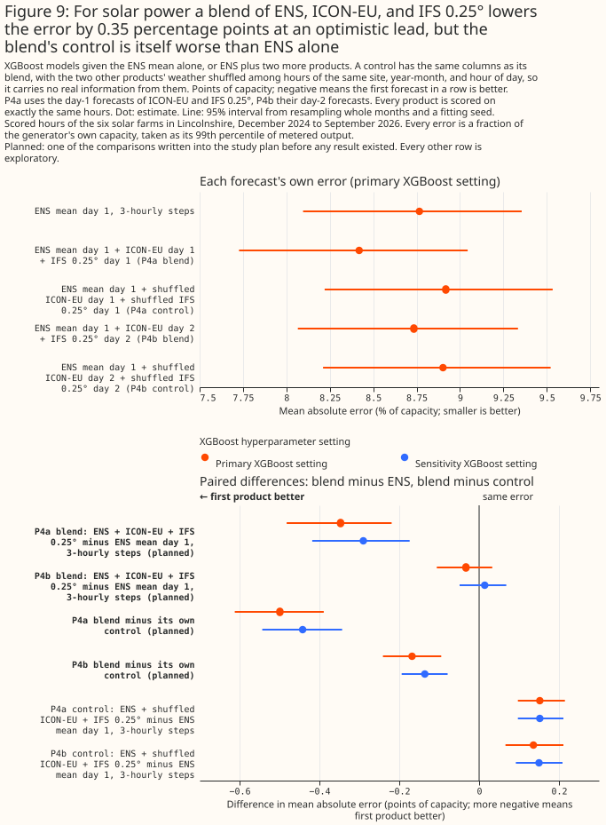
Figure 9: For solar power a blend of ENS, ICON-EU, and IFS 0.25° lowers the error by 0.35 percentage points at an optimistic lead, but the blend's control is itself worse than ENS alone.
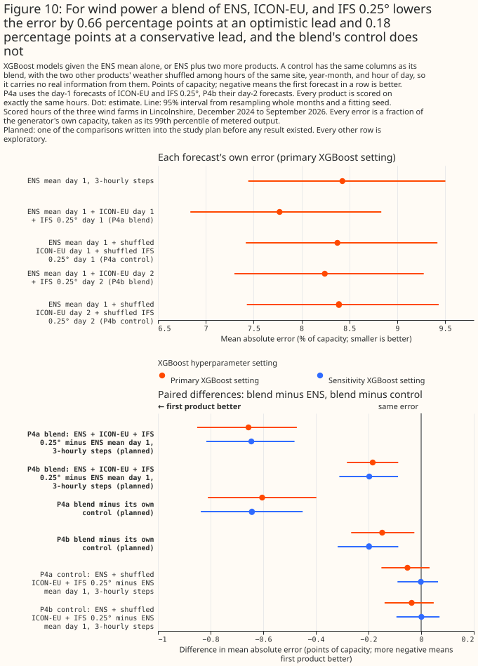
Figure 10: For wind power a blend of ENS, ICON-EU, and IFS 0.25° lowers the error by 0.66 percentage points at an optimistic lead and 0.18 percentage points at a conservative lead, and the blend's control does not.
A second-shuffle refit of the blends on the GPU leaves the wind blend claim in place, and shows that every solar control is worse than ENS alone. Each published blend guard subtracts one shuffled control, and two shuffles of the same AIFS Single weather differ by +0.453 [+0.223, +0.696] points for solar and +0.266 [-0.051, +0.626] points for wind (see the AIFS section). The study therefore refitted P4a and P4b on the published rows and folds on the GPU, with the published shuffle and a second shuffle under another seed, both within generator, year-month, and hour of day. Every contrast in the refit is exploratory. The published CPU numbers above stay as published, and the GPU refit sits beside them, not in place of them, because a GPU fit is not bit-identical to a CPU fit.
| Refit on the GPU, primary setting (points) | Solar P4a | Solar P4b | Wind P4a | Wind P4b |
|---|---|---|---|---|
| Blend minus ENS day 1 | -0.348 [-0.477, -0.222] | -0.029 [-0.097, +0.040] | -0.605 [-0.808, -0.387] | -0.175 [-0.289, -0.076] |
| Blend minus first control (published shuffle) | -0.495 [-0.596, -0.385] | -0.161 [-0.224, -0.096] | -0.574 [-0.778, -0.354] | -0.169 [-0.272, -0.068] |
| Blend minus second control (second seed) | -0.437 [-0.560, -0.313] | -0.123 [-0.216, -0.033] | -0.605 [-0.790, -0.405] | -0.182 [-0.273, -0.094] |
| First control minus ENS day 1 | +0.147 [+0.080, +0.215] | +0.133 [+0.059, +0.209] | -0.031 [-0.094, +0.023] | -0.007 [-0.076, +0.054] |
| Second control minus ENS day 1 | +0.088 [+0.025, +0.175] | +0.094 [+0.028, +0.176] | -0.000 [-0.072, +0.065] | +0.007 [-0.070, +0.084] |
| Seed-to-seed gap: first control minus second | +0.059 [-0.008, +0.125] | +0.039 [-0.021, +0.096] | -0.031 [-0.099, +0.031] | -0.013 [-0.087, +0.055] |
The GPU refit's ENS day-1 error is 8.771% [8.096, 9.373] for solar and 8.350% [7.373, 9.364] for wind, and the blends' errors are 8.422% and 8.742% for solar (P4a and P4b) and 7.745% and 8.175% for wind.
The two shuffle seeds agree on every guard, at both settings. The seed-to-seed gap is not statistically significant at the 5% level for either blend or technology at the primary setting, and its interval includes zero at the sensitivity setting too (solar P4a +0.050 [-0.005, +0.099], solar P4b +0.039 [-0.008, +0.084], wind P4a +0.035 [-0.021, +0.097], wind P4b +0.014 [-0.046, +0.077]). The blend minus each control has the same sign and significance at both seeds and both settings. The seed noise that the AIFS null control showed is therefore not visible in these controls.
For wind, the blend claim stands: the blend beats both controls, and neither control is worse than ENS alone. Neither wind control differs significantly from ENS alone at either setting, so each guard can discriminate. P4b, the blend a live service could read, has a lower error than ENS alone by -0.175 points [-0.289, -0.076] on the GPU (-0.184 [-0.282, -0.087] on the CPU), and than each control by -0.169 and -0.182 points.
For solar, all four controls are significantly worse than ENS alone at the primary setting, so their guards are uninformative for the blend claim, and the verdict stays "may lower the error". The controls are worse than ENS alone by +0.088 to +0.147 points, and the same holds at the sensitivity setting. A blend that beats a control that is itself worse than ENS alone does not show that the added weather carries information. P4b minus ENS alone is -0.029 points [-0.097, +0.040], which includes zero, so the solar blend claim rests on P4a, whose added runs a live service may not be able to read. The refit removes neither limit.
Part of ENS's advantage is ensemble averaging and timing
The gaps between ENS and the other products are partly gaps in ensemble averaging and timing, not only gaps in weather-model quality, and the evidence differs between solar and wind. ENS is averaged over its ensemble members, whereas each Previous Runs product is one run. The study has no contrast that separates ENS's H3-cell average from a Previous Runs product's single grid point. The contrasts below show how much of each gap remains when the ensemble averaging or the hourly timing is removed.
A single ENS control run has a higher error than the ENS mean, and against the control run the wind differences for ICON-EU, ICON-D2, and ICON global are not statistically significant. The ENS control run is one run of the ensemble at ENS's own day-1 lead. The ENS mean minus the control run at day 1 is -0.300 points [-0.447, -0.130] for solar and -0.307 points [-0.440, -0.191] for wind, so averaging the ensemble members lowers the error (exploratory, primary setting only).
| Exploratory: day-1 product minus ENS control run (points, primary) | Solar | Wind |
|---|---|---|
| UKV | +0.942 [+0.545, +1.377] | +0.463 [+0.151, +0.733] |
| ICON-D2 | +0.802 [+0.432, +1.281] | -0.098 [-0.364, +0.137] |
| ICON-EU | +0.517 [+0.284, +0.778] | -0.138 [-0.403, +0.100] |
| ICON global | +0.695 [+0.373, +1.091] | +0.212 [-0.145, +0.632] |
| IFS 0.25° | -0.264 [-0.498, -0.033] | -0.304 [-0.514, -0.095] |
| GFS | +1.851 [+1.493, +2.250] | +0.329 [+0.052, +0.584] |
| GEFS mean | +0.972 [+0.680, +1.269] | +0.551 [+0.274, +0.772] |
The control-run contrasts favour the Previous Runs products, because those products have a shorter lead than the control run on most hours. The control run has a lead of 24 + h hours. UKV, ICON-D2, ICON-EU, ICON global, IFS 0.25°, and GFS have a lead of 24 + (h mod n) hours. IFS 0.25° day 1 can also come from a newer ECMWF run than the control run's 00 UTC run. Only GEFS has the control run's exact lead. The table also compares products with different native grids: ICON-EU's is 6.5 km, ICON-D2's is 2.2 km, UKV's is 1.5 km, and the control run's is about 9 km.
For wind, ICON-EU, ICON-D2, and ICON global have no detectable difference from the single ENS control run, and for solar every ICON product still has a higher error. IFS 0.25° has a lower error than the control run for both technologies. UKV has a higher error than the control run for both technologies, and GEFS has a higher error for both. The single-run contrasts are exploratory and use the primary setting only.
Averaging the forecasts over 3 hours or a day shrinks the wind gaps to ENS relative to ENS's own error, and does not shrink the solar gaps (exploratory). Each product's predictions and the measurements are averaged over the block before the error is scored. ENS and GEFS reach the XGBoost model as smoothed 3-hourly fields, so a gap that shrinks as the block lengthens may reflect that smoothing rather than forecast skill. Only GEFS shares ENS's lead.
| Exploratory: difference from ENS day 1 (points, primary) | 1 hour | 3 hours | 1 day |
|---|---|---|---|
| Solar, UKV | +1.242 [+0.824, +1.689] | +0.984 [+0.560, +1.425] | +0.945 [+0.453, +1.480] |
| Solar, ICON-EU | +0.817 [+0.584, +1.069] | +0.655 [+0.416, +0.904] | +0.590 [+0.296, +0.877] |
| Solar, ICON-D2 | +1.102 [+0.704, +1.633] | +0.942 [+0.541, +1.473] | +0.925 [+0.468, +1.451] |
| Solar, GEFS | +1.272 [+0.937, +1.601] | +1.155 [+0.826, +1.468] | +1.300 [+0.925, +1.673] |
| Wind, UKV | +0.770 [+0.460, +1.057] | +0.458 [+0.165, +0.731] | +0.303 [-0.119, +0.666] |
| Wind, ICON-EU | +0.169 [-0.064, +0.384] | +0.031 [-0.194, +0.242] | -0.083 [-0.393, +0.218] |
| Wind, ICON-D2 | +0.209 [-0.015, +0.426] | +0.038 [-0.183, +0.268] | -0.147 [-0.435, +0.128] |
| Wind, GEFS | +0.858 [+0.598, +1.099] | +0.875 [+0.607, +1.123] | +0.689 [+0.397, +1.006] |
Averaging shortens every error, so the table below states each gap as a share of ENS's own error at the same block length (exploratory).
| Exploratory: gap as % of ENS's own error at that block length (primary), with 95% interval | 1 hour | 3 hours | 1 day |
|---|---|---|---|
| Solar, ENS's own error (% of capacity) | 8.766 | 6.817 | 5.830 |
| Solar, UKV | +14.2% [+9.4%, +19.3%] | +14.4% [+8.2%, +20.9%] | +16.2% [+7.8%, +25.4%] |
| Solar, ICON-EU | +9.3% [+6.7%, +12.2%] | +9.6% [+6.1%, +13.3%] | +10.1% [+5.1%, +15.0%] |
| Solar, ICON-D2 | +12.6% [+8.0%, +18.6%] | +13.8% [+7.9%, +21.6%] | +15.9% [+8.0%, +24.9%] |
| Solar, GEFS | +14.5% [+10.7%, +18.3%] | +16.9% [+12.1%, +21.5%] | +22.3% [+15.9%, +28.7%] |
| Wind, ENS's own error (% of capacity) | 8.427 | 7.482 | 5.233 |
| Wind, UKV | +9.1% [+5.5%, +12.5%] | +6.1% [+2.2%, +9.8%] | +5.8% [-2.3%, +12.7%] |
| Wind, ICON-EU | +2.0% [-0.8%, +4.6%] | +0.4% [-2.6%, +3.2%] | -1.6% [-7.5%, +4.2%] |
| Wind, ICON-D2 | +2.5% [-0.2%, +5.1%] | +0.5% [-2.4%, +3.6%] | -2.8% [-8.3%, +2.4%] |
| Wind, GEFS | +10.2% [+7.1%, +13.0%] | +11.7% [+8.1%, +15.0%] | +13.2% [+7.6%, +19.2%] |
Each interval is the gap's paired interval divided by ENS's own error at that block length, and the division treats ENS's own error as fixed.
For solar, the gaps shrink in points but not relative to ENS's own error, so the block averages give no support for a timing-noise reading of the solar gaps (exploratory). Averaging over a day cuts ENS's own error from 8.766% to 5.830% of capacity. UKV's gap falls from +1.242 points to +0.945 points, but rises from 14.2% to 16.2% of ENS's own error. ICON-EU's gap rises from 9.3% to 10.1% of ENS's own error. GEFS, which has ENS's exact lead, keeps a gap of +1.300 points [+0.925, +1.673] over 1 day, which is 22.3% of ENS's own error. Every solar gap is statistically significant at every block length. For every product, though, the share's interval at 1 hour overlaps its interval over 1 day, so the study cannot show that any solar share changed with the block length.
For wind, the gaps of the Previous Runs products shrink relative to ENS's own error, which is consistent with timing noise accounting for part of them, and GEFS's gap does not shrink (exploratory). UKV's gap falls from 9.1% of ENS's own error at 1 hour to 5.8% over 1 day, and from +0.770 points [+0.460, +1.057] to +0.303 points [-0.119, +0.666]. The 1-day UKV gap is not statistically significant at the 5% level. ICON-EU's gap is +0.031 points [-0.194, +0.242] at 3 hours and -0.083 points [-0.393, +0.218] over 1 day, and ICON-D2's is +0.038 points and -0.147 points. The hourly gaps of ICON-EU (+0.169 points [-0.064, +0.384]) and ICON-D2 (+0.209 points [-0.015, +0.426]) already had intervals that include zero, so averaging did not turn a significant ICON gap into a null gap. GEFS's gap is +0.875 points at 3 hours and +0.689 points at 1 day, both statistically significant, and rises from 10.2% to 13.2% of ENS's own error. The shrinkage for the Previous Runs products does not show whether timing noise or grid-point sampling accounts for more of the wind gap. The share's interval at 1 hour also overlaps its interval over 1 day for every wind product, so the study cannot show that any wind share changed.
Among the other products, IFS 0.25° comes closest to ENS (exploratory)
Among the remaining products, with IFS 0.25° for comparison (all exploratory), only IFS 0.25° avoids the verdict "loses" for solar, and only IFS 0.25° and ICON-D2 avoid the verdict "loses" for wind, as ICON-EU does in its planned wind contrast. The exploratory brackets repeat the planned bracket, at the primary setting only, for every other day and for every other Previous Runs product: Météo-France's AROME and ARPEGE, the HARMONIE-AROME runs of the Danish Meteorological Institute (DMI) and the Royal Netherlands Meteorological Institute (KNMI), GFS, ICON-D2, and ICON global. The table gives the upper-side contrast at day 1: the product minus ENS at day 1. A positive, significant contrast is a verdict of "loses".
| Product, day 1 minus ENS day 1 (points, primary) | Solar | Wind |
|---|---|---|
| AROME | +1.106 [+0.738, +1.479] | no wind arm |
| ARPEGE | +1.549 [+1.210, +1.879] | no wind arm |
| DMI HARMONIE-AROME | +1.084 [+0.748, +1.421] | +0.746 [+0.352, +1.270] |
| GFS | +2.152 [+1.746, +2.544] | +0.636 [+0.394, +0.856] |
| ICON-D2 | +1.102 [+0.704, +1.633] | +0.209 [-0.015, +0.426] (unresolved) |
| ICON global | +0.995 [+0.673, +1.418] | +0.519 [+0.193, +0.914] |
| IFS 0.25° | +0.036 [-0.225, +0.296] (unresolved) | +0.003 [-0.163, +0.186] (unresolved) |
| KNMI HARMONIE-AROME | +1.330 [+0.857, +1.926] | +0.684 [+0.388, +1.037] |
At days 2 and 3, IFS 0.25° stays unresolved against ENS, and ICON-EU at day 2 still loses. For solar, IFS 0.25° minus ENS is -0.132 points [-0.362, +0.092] at day 2 and +0.120 points [-0.108, +0.332] at day 3, both unresolved. For wind the IFS 0.25° contrasts are -0.280 points [-0.470, -0.095] at day 2 and -0.278 points [-0.629, +0.078] at day 3. The wind verdict is unresolved for both days because the lower side of the bracket, the IFS 0.25° error minus ENS's error one day earlier, is positive: +0.857 points [+0.613, +1.123] at day 2 and +1.335 points [+1.049, +1.633] at day 3. ICON-EU day 2 has upper sides of +0.906 points [+0.646, +1.157] for solar and +0.430 points [+0.217, +0.653] for wind, and both verdicts are "loses". The lower side of IFS 0.25° at day 1 for wind is +0.947 points [+0.796, +1.105].
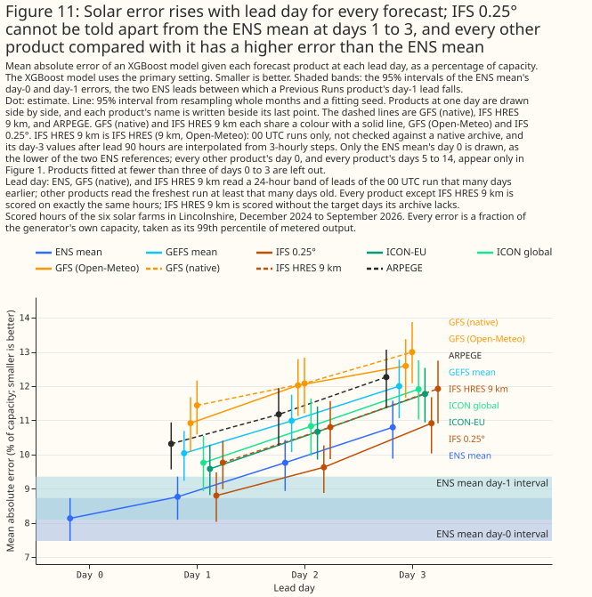
Figure 11: Solar error rises with lead day for every forecast; IFS 0.25° cannot be told apart from the ENS mean at days 1 to 3, and every other product compared with it has a higher error than the ENS mean.
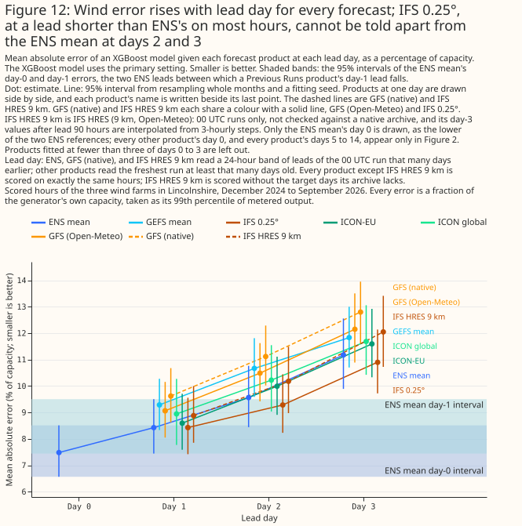
Figure 12: Wind error rises with lead day for every forecast; IFS 0.25°, at a lead shorter than ENS's on most hours, cannot be told apart from the ENS mean at days 2 and 3.
UKV loses to ENS before and after its 2026-01-21 upgrade (exploratory)
UKV loses to ENS both before and after the upgrade of 2026-01-21 (exploratory). Before the upgrade, UKV minus ENS day 1 is +1.056 points [+0.478, +1.674] for solar (22,621 rows in 13 months) and +0.772 points [+0.364, +1.145] for wind (26,923 rows in 13 months). After the upgrade, the differences are +1.577 points [+1.116, +2.103] for solar (12,642 rows in 8 months) and +0.765 points [+0.406, +1.065] for wind (10,484 rows in 8 months). The lower sides are also positive in both eras. For solar the point estimate is larger after the upgrade, but the two intervals overlap ([+0.478, +1.674] before and [+1.116, +2.103] after), so the study does not show that the gap changed. For wind the two intervals overlap almost entirely.
Neither native GFS nor IFS HRES 9 km has an error detectably lower than the ENS mean at any lead day (exploratory)
Native GFS has a higher error than the ENS mean at every lead day from 1 to 10 for both technologies, and at day 0 for solar. The two cannot be told apart at day 14 for either technology, or at day 0 for wind. The native GFS arm at day N reads a 00 UTC run's leads from 24N hours, which is ENS's own lead, so the day-N contrasts compare equal leads. Day 0 is the exception: native GFS reads the freshest of four runs a day, a shorter lead than ENS's, which favours native GFS. The contrasts are exploratory, and each product is read at a different spatial scale (native GFS at the nearest 0.25° cell, ENS as an average over an H3 cell).
| Exploratory: native GFS minus ENS mean at the same day (primary) | Solar: native GFS (%) | Solar: ENS mean (%) | Solar difference (points) | Wind: native GFS (%) | Wind: ENS mean (%) | Wind difference (points) |
|---|---|---|---|---|---|---|
| Day 0 | 10.061 | 8.125 | +1.936 [+1.649, +2.207] | 7.567 | 7.426 | +0.141 [-0.019, +0.293] |
| Day 1 | 11.438 | 8.771 | +2.667 [+2.286, +3.021] | 9.622 | 8.350 | +1.272 [+1.003, +1.516] |
| Day 2 | 12.081 | 9.759 | +2.322 [+2.020, +2.629] | 11.117 | 9.473 | +1.644 [+1.372, +1.882] |
| Day 3 | 12.996 | 10.797 | +2.199 [+1.852, +2.541] | 12.798 | 11.089 | +1.709 [+1.302, +2.079] |
| Day 5 | 14.112 | 12.560 | +1.552 [+1.086, +2.059] | 16.233 | 14.251 | +1.981 [+1.141, +2.689] |
| Day 7 | 14.423 | 13.748 | +0.676 [+0.337, +1.058] | 17.946 | 16.884 | +1.062 [+0.188, +1.892] |
| Day 10 | 14.867 | 14.457 | +0.410 [+0.082, +0.727] | 19.129 | 18.223 | +0.907 [+0.318, +1.536] |
| Day 14 | 14.696 | 14.876 | -0.180 [-0.426, +0.052] | 19.184 | 18.867 | +0.318 [-0.156, +0.775] |
Native GFS has a higher error than GFS (Open-Meteo) at days 1 and 3 for solar and at days 1, 2, 3, and 5 for wind, and the difference mixes source and lead. Open-Meteo serves the freshest run at least N days old at day N, a shorter lead than the 24N hours of the native arm. The two cannot be told apart at the other days compared.
| Exploratory: GFS (native) minus GFS (Open-Meteo) at the same day (points, primary) | Solar | Wind |
|---|---|---|
| Day 1 | +0.536 [+0.322, +0.746] | +0.634 [+0.452, +0.800] |
| Day 2 | +0.070 [-0.195, +0.319] | +0.687 [+0.437, +0.967] |
| Day 3 | +0.418 [+0.230, +0.634] | +0.688 [+0.274, +1.056] |
| Day 5 | +0.228 [-0.041, +0.508] | +0.509 [+0.142, +0.938] |
| Day 7 | +0.045 [-0.255, +0.365] | +0.160 [-0.291, +0.597] |
IFS HRES 9 km has a higher error than the ENS mean at every lead day fitted, for both technologies. IFS HRES 9 km and the ENS mean read the same lead, the 00 UTC run at 24N hours, so the difference is not a difference of lead. The difference may include the ensemble averaging that ENS's mean has and a single run lacks. The study did not test that explanation, and did not check Open-Meteo's processing of HRES against a native archive. Every arm here is scored on the shared hours minus the seven run days the archive lacks, and each contrast on the rows both arms score.
| Exploratory: IFS HRES 9 km minus ENS mean at the same day, on the rows both score (primary) | Solar: IFS HRES 9 km (%) | Solar: ENS mean (%) | Solar difference (points) | Wind: IFS HRES 9 km (%) | Wind: ENS mean (%) | Wind difference (points) |
|---|---|---|---|---|---|---|
| Day 0 | 8.816 | 8.142 | +0.674 [+0.522, +0.822] | 7.636 | 7.434 | +0.202 [+0.045, +0.378] |
| Day 1 | 9.762 | 8.792 | +0.970 [+0.762, +1.161] | 8.879 | 8.379 | +0.500 [+0.305, +0.717] |
| Day 2 | 10.801 | 9.775 | +1.026 [+0.796, +1.249] | 10.179 | 9.506 | +0.673 [+0.419, +0.938] |
| Day 3 | 11.925 | 10.834 | +1.091 [+0.775, +1.416] | 12.047 | 11.129 | +0.918 [+0.606, +1.228] |
| Day 5 | 13.475 | 12.623 | +0.852 [+0.425, +1.346] | 15.810 | 14.323 | +1.487 [+0.987, +1.913] |
| Day 7 | 14.505 | 13.789 | +0.716 [+0.278, +1.106] | 17.864 | 16.996 | +0.868 [+0.166, +1.631] |
IFS HRES 9 km has a higher error than IFS 0.25° from Previous Runs at days 1, 2, 3, and 5, and the two cannot be told apart at day 7, but the two products read different leads. Previous Runs serves IFS 0.25° from the freshest run at least N days old, a shorter lead than IFS HRES 9 km's. A lead difference that averages about 9 hours probably accounts for only part of gaps this large, and the study did not test what accounts for the rest, such as Open-Meteo's processing of the 9 km archive. Against ICON-EU, which also has a shorter lead, IFS HRES 9 km cannot be told apart at days 1 to 3 for solar, has a higher error at days 1 and 3 for wind, and cannot be told apart at day 2 for wind.
| Exploratory: IFS HRES 9 km minus the product named, at the same day, on the rows both score (points, primary) | Solar | Wind |
|---|---|---|
| IFS 0.25° at day 1 | +0.927 [+0.686, +1.152] | +0.488 [+0.314, +0.674] |
| IFS 0.25° at day 2 | +1.143 [+0.830, +1.445] | +0.938 [+0.680, +1.222] |
| IFS 0.25° at day 3 | +0.966 [+0.668, +1.257] | +1.203 [+0.876, +1.551] |
| IFS 0.25° at day 5 | +0.780 [+0.485, +1.055] | +0.982 [+0.579, +1.410] |
| IFS 0.25° at day 7 | -0.115 [-0.553, +0.208] | +0.383 [-0.143, +0.986] |
| ICON-EU at day 1 | +0.166 [-0.123, +0.418] | +0.340 [+0.156, +0.572] |
| ICON-EU at day 2 | +0.125 [-0.188, +0.410] | +0.211 [-0.047, +0.497] |
| ICON-EU at day 3 | +0.118 [-0.217, +0.413] | +0.494 [+0.168, +0.811] |
AIFS Single has a lower wind error than ENS's control member at day 1, and no solar difference is claimable
On the 16 months of hours that AIFS Single covers, AIFS Single has a lower wind error than ENS's control member at day 1 at both XGBoost settings, and the solar difference is not claimable. The contrast is the one AIFS contrast planned before any AIFS fit, and it is the study's deciding contrast for AIFS. Both arms read 6-hourly steps, so the comparison does not favour ENS's finer steps. AIFS Single's day-1 error is 9.402% [8.708, 10.116] of capacity for solar against 9.496% [8.756, 10.281] for the ENS control member, and 8.334% [7.550, 9.167] for wind against 8.916% [7.853, 10.147]. For wind the difference is statistically significant at the 5% level at both settings, and stays significant with a 97.5% interval, and every dropped month keeps the sign (the estimate runs from -0.673 to -0.357 points). The estimate shrinks to -0.207 [-0.414, -0.013] points when both arms lose day of year, and the study did not establish why. For solar every interval includes zero, and the estimate runs from -0.188 to -0.006 points when each month is dropped in turn, so the study makes no solar claim.
| Deciding contrast: AIFS Single day 1 minus ENS control member day 1, both on 6-hourly steps (points) | Solar | Wind |
|---|---|---|
| Primary setting, 95% interval | -0.094 [-0.426, +0.260] | -0.581 [-1.126, -0.150] |
| Sensitivity setting, 95% interval | -0.129 [-0.459, +0.222] | -0.501 [-0.912, -0.132] |
| Primary setting, without day of year in either arm | -0.124 [-0.446, +0.203] | -0.207 [-0.414, -0.013] |
| Primary setting, 97.5% interval (Bonferroni across solar and wind) | -0.094 [-0.477, +0.311] | -0.581 [-1.233, -0.118] |
Against ENS's mean on the same 6-hourly steps, AIFS Single at day 1 is not better, and at day 2 the result differs between solar and wind (exploratory and post hoc). AIFS Single minus the ENS mean at day 1 is +0.148 [-0.043, +0.349] points for solar and -0.182 [-0.514, +0.100] points for wind. At day 2 the difference is -0.268 [-0.459, -0.067] points for solar, and +0.096 [-0.228, +0.367] points for wind. The ENS mean at day 1 has an error of 9.254% [8.573, 9.969] for solar and 8.516% [7.579, 9.569] for wind. The ENS mean on 3-hourly steps has a lower error still (9.010% [8.346, 9.732] and 8.195% [7.248, 9.285]), and the positive control passes: 6-hourly steps raise the ENS mean's error by +0.243 [+0.153, +0.332] points for solar and +0.321 [+0.206, +0.419] points for wind.
Row set single (16 months): each arm's own error (% of capacity, primary) |
Solar | Wind |
|---|---|---|
| AIFS Single, day 1 | 9.402% [8.708, 10.116] | 8.334% [7.550, 9.167] |
| AIFS Single, day 2 | 10.031% [9.229, 10.762] | 9.873% [8.600, 11.361] |
| AIFS Single, day 1, nearest cell | 9.386% [8.679, 10.115] | 8.320% [7.529, 9.161] |
| ENS mean, day 1, 6-hourly steps | 9.254% [8.573, 9.969] | 8.516% [7.579, 9.569] |
| ENS mean, day 2, 6-hourly steps | 10.299% [9.558, 10.988] | 9.776% [8.501, 11.202] |
| ENS control member, day 1, 6-hourly steps | 9.496% [8.756, 10.281] | 8.916% [7.853, 10.147] |
| ENS control member, day 2, 6-hourly steps | 10.639% [9.771, 11.477] | 10.515% [8.935, 12.304] |
| ENS mean, day 1, 3-hourly steps | 9.010% [8.346, 9.732] | 8.195% [7.248, 9.285] |
| IFS 0.25°, day 1, hourly steps | 9.073% [8.357, 9.837] | 8.141% [7.140, 9.310] |
| AIFS Single, day 1, shuffled weather | 15.582% [14.438, 16.808] | 18.912% [16.399, 21.512] |
Row set single: exploratory, post hoc contrasts (points, primary) |
Solar | Wind |
|---|---|---|
| AIFS Single day 1 − ENS mean day 1 (6-hourly steps) | +0.148 [-0.043, +0.349] | -0.182 [-0.514, +0.100] |
| AIFS Single day 2 − ENS control member day 2 (6-hourly steps) | -0.608 [-0.925, -0.302] | -0.643 [-1.195, -0.188] |
| AIFS Single day 2 − ENS mean day 2 (6-hourly steps) | -0.268 [-0.459, -0.067] | +0.096 [-0.228, +0.367] |
| AIFS Single day 1 − IFS 0.25° day 1 (hourly steps, one-sided reference) | +0.329 [+0.088, +0.583] | +0.194 [-0.284, +0.594] |
| AIFS Single day 1 − AIFS Single day 1, nearest cell | +0.016 [-0.021, +0.050] | +0.014 [-0.028, +0.056] |
| ENS mean 6-hourly − ENS mean 3-hourly, day 1 (positive control) | +0.243 [+0.153, +0.332] | +0.321 [+0.206, +0.419] |
| AIFS Single day 1 − the same arm with shuffled weather | -6.180 [-7.100, -5.387] | -10.578 [-12.609, -8.648] |
| Two shuffles of AIFS Single's weather, one minus the other (null) | +0.453 [+0.223, +0.696] | +0.266 [-0.051, +0.626] |
Row set single: pairs near the 5% line, sensitivity setting (points) |
Solar | Wind |
|---|---|---|
| AIFS Single day 1 − ENS mean day 1 (6-hourly steps) | +0.115 [-0.072, +0.318] | -0.134 [-0.375, +0.105] |
| AIFS Single day 2 − ENS control member day 2 (6-hourly steps) | not fitted | -0.538 [-1.007, -0.155] |
| AIFS Single day 2 − ENS mean day 2 (6-hourly steps) | -0.242 [-0.445, -0.016] | not fitted |
| AIFS Single day 1 − IFS 0.25° day 1 (hourly steps, one-sided reference) | +0.284 [+0.035, +0.549] | not fitted |
| Two shuffles of AIFS Single's weather, one minus the other (null) | not fitted | +0.422 [+0.137, +0.833] |
Reading AIFS Single from the nearest cell instead of the cell average changes nothing detectable, and shuffling AIFS Single's weather raises the error by several points. The nearest-cell difference is +0.016 [-0.021, +0.050] points for solar and +0.014 [-0.028, +0.056] points for wind. AIFS Single minus the arm given AIFS Single's weather shuffled among hours of the same generator, year-month, and UTC hour is -6.180 [-7.100, -5.387] points for solar and -10.578 [-12.609, -8.648] points for wind, so AIFS Single's weather carries information beyond the calendar and the sun's position. Two different shuffles of the same weather differ by +0.453 [+0.223, +0.696] points for solar and +0.266 [-0.051, +0.626] points for wind (+0.422 [+0.137, +0.833] points at the sensitivity setting), so this null control fails: two arms that carry the same information differ significantly at the 5% level. The month-and-seed intervals therefore do not cover the difference between one shuffle and another, and any contrast against a shuffled arm, including the blend guards in the blend section, may carry noise of that size which its interval does not show. The deciding AIFS contrast involves no shuffled arm.
The sign of the AIFS Single minus ENS mean difference changes between version eras, and each era covers different months as well as a different version (exploratory). The eras hold 5, 7, and 4 months, and the report prints an interval only for an era of 6 months or more. The version change, the season, and IFS Cycle 50r1 (which began with AIFS Single v2 on 2026-05-12) cannot be separated.
Row set single: AIFS Single day 1 − ENS mean day 1 (6-hourly steps) by version era (points, primary; months with the era's sign) |
Solar | Wind |
|---|---|---|
| Era 0, AIFS Single v1.0 (5 months) | +0.103 (3 of 5) | -0.092 (3 of 5) |
| Era 1, AIFS Single v1.1 (7 months) | +0.346 [-0.073, +0.699] (4 of 7) | -0.455 [-1.071, +0.062] (5 of 7) |
| Era 2, AIFS Single v2 (4 months) | -0.033 (2 of 4) | +0.245 (3 of 4) |
The AIFS ENS contrasts are descriptive only. About 84% of the scored (generator, fold, calendar month) cells of the 11-month row set have no training row of their calendar month, so an XGBoost model scores most of its months in a season it has not seen. The tables give the absolute error beside each contrast, and none of these results is a claim.
Row set ens (11 months): each arm's own error (% of capacity, primary) |
Solar | Wind |
|---|---|---|
| AIFS ENS mean, day 1 | 9.243% [8.280, 10.023] | 8.949% [7.842, 10.049] |
| AIFS ENS mean, day 2 | 9.986% [8.781, 11.029] | 10.296% [8.811, 11.798] |
| AIFS Single, day 1 | 9.337% [8.272, 10.205] | 9.003% [7.957, 10.010] |
| ENS mean, day 1, 6-hourly steps | 9.233% [8.345, 9.941] | 9.205% [7.853, 10.537] |
| ENS mean, day 2, 6-hourly steps | 10.118% [8.977, 11.128] | 10.796% [9.057, 12.556] |
Row set ens: descriptive contrasts (points, primary) |
Solar | Wind |
|---|---|---|
| AIFS ENS mean day 1 − ENS mean day 1 (6-hourly steps) | +0.010 [-0.166, +0.212] | -0.257 [-0.610, +0.086] |
| AIFS ENS mean day 2 − ENS mean day 2 (6-hourly steps) | -0.133 [-0.388, +0.100] | -0.500 [-0.931, -0.110] |
| AIFS ENS mean day 1 − AIFS Single day 1 | -0.095 [-0.294, +0.109] | -0.055 [-0.290, +0.181] |
| AIFS ENS mean day 2 − AIFS Single day 2 | +0.120 [-0.209, +0.415] | -0.644 [-1.277, -0.196] |
Row set ens: pairs near the 5% line, sensitivity setting (points, descriptive) |
Solar | Wind |
|---|---|---|
| AIFS ENS mean day 1 − ENS mean day 1 (6-hourly steps) | not fitted | -0.107 [-0.367, +0.130] |
| AIFS ENS mean day 2 − ENS mean day 2 (6-hourly steps) | not fitted | -0.265 [-0.576, +0.009] |
| AIFS ENS mean day 2 − AIFS Single day 2 | not fitted | -0.478 [-0.741, -0.223] |
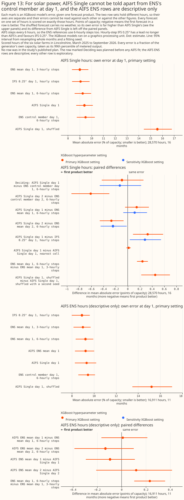
Figure 13: For solar power, AIFS Single cannot be told apart from ENS's control member at day 1, and the AIFS ENS rows are descriptive only.
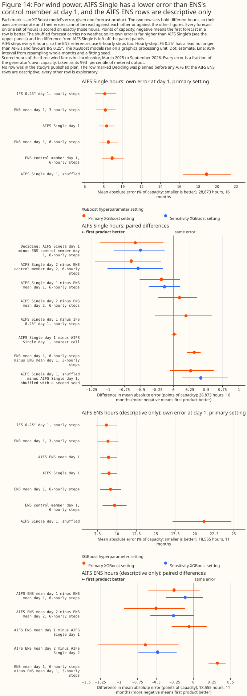
Figure 14: For wind power, AIFS Single has a lower error than ENS's control member at day 1, and the AIFS ENS rows are descriptive only.
At day 7 a blend of ENS and AIFS Single lowers the solar error, and at day 14 no forecast has skill to compare
At day 7, giving an XGBoost model both ENS's mean and AIFS Single lowers the solar error, and the
wind difference is not claimable. At day 14, neither technology has any skill to compare. This
section is exploratory, except the four deciding contrasts per technology (H7, H14, B7, and B14)
that How AIFS is read names. Those four were named before the fit but after the
day-1 and day-2 AIFS results were known, so the page does not call them planned. Every number is at
the primary setting unless a row says otherwise. The rows are the single row set, 6 solar farms
and 3 wind farms, 16 months, and the AIFS Single versions those months hold. The survey page says
that AIFS has not been shown to improve faster than the physics-based
IFS
and that each AIFS version should be scored
separately, and this
section treats AIFS Single as a forecast that has a lower or higher error, never as one that has
improved.
Row set single: each arm's own error (% of capacity, primary) |
Solar day 7 | Solar day 14 | Wind day 7 | Wind day 14 |
|---|---|---|---|---|
| AIFS Single | 14.198% [13.023, 15.531] | 15.287% [14.187, 16.562] | 17.355% [15.186, 19.546] | 19.426% [16.763, 22.161] |
| ENS control member | 14.638% [13.572, 15.812] | 15.321% [14.164, 16.604] | 17.909% [16.009, 19.796] | 18.892% [16.472, 21.526] |
| ENS mean | 14.297% [13.188, 15.561] | 15.207% [14.114, 16.446] | 16.555% [14.754, 18.423] | 18.599% [16.262, 21.033] |
| Blend of ENS mean and AIFS Single | 13.901% [12.753, 15.236] | 15.236% [14.154, 16.465] | 16.281% [14.401, 18.155] | 18.901% [16.465, 21.376] |
| Blend with AIFS Single's weather shuffled | 14.338% [13.257, 15.604] | 15.311% [14.215, 16.565] | 16.605% [14.754, 18.488] | 18.522% [16.221, 20.882] |
| AIFS Single with its weather shuffled (first seed) | 15.351% [14.218, 16.651] | 15.441% [14.287, 16.738] | 18.966% [16.390, 21.512] | 18.856% [16.247, 21.508] |
| IFS 0.25° (hourly steps) | 14.929% [13.835, 16.171] | not fitted | 17.966% [15.752, 20.141] | not fitted |
| IFS HRES 9 km | 14.701% [13.626, 15.822] | not fitted | 17.858% [15.993, 19.701] | not fitted |
The table's rows differ by day in the rows scored (28,208 solar and 28,419 wind rows at day 7, 27,449 and 27,440 at day 14). IFS HRES 9 km lacks some target days, so on the 28,041 solar rows and 28,294 wind rows it has, its error is 14.674% [13.606, 15.813] and 17.839% [15.960, 19.695]. IFS 0.25° and IFS HRES 9 km are not fitted at day 14 (their archives stop at day 7 and day 10).
For solar power at day 7, the blend of ENS's mean and AIFS Single lowers the error against ENS's mean alone, and the shuffled control shows the gain comes from AIFS Single's weather (B7, deciding). The blend's error is 13.901% against 14.297% for ENS's mean alone, a difference of -0.396 points [-0.578, -0.201]. The difference is -0.258 points [-0.432, -0.077] at the sensitivity setting, and -0.396 points [-0.632, -0.118] at the 99.375% Bonferroni level. With each month dropped in turn the estimate runs from -0.454 to -0.359 points, so no month reverses the sign. The guard, the blend minus the blend given shuffled AIFS Single weather, is -0.437 points [-0.674, -0.169] at the primary setting and -0.342 points [-0.547, -0.128] at the sensitivity setting. The shuffled control is not significantly worse than ENS's mean alone (+0.041 points [-0.126, +0.198]), so the guard can discriminate. The verdict is that the blend lowers the error at day 7 for these six solar farms. The gain is 0.396 points of capacity, about 2.8% of ENS's mean's own error.
For wind power at day 7, the blend's gain over ENS's mean is not claimable. The difference is -0.274 points [-0.586, +0.064] at the primary setting, which includes zero, and -0.361 points [-0.529, -0.183] at the sensitivity setting, which does not. The guard is -0.325 points [-0.667, -0.007] at the primary setting and -0.414 points [-0.621, -0.199] at the sensitivity setting. The verdict is no detectable difference, and a gain as large as 0.586 points is not excluded. Every dropped month keeps the sign of the estimate.
AIFS Single alone has a significantly lower solar error than ENS's control member at day 7 at the primary setting only, and neither technology's difference is claimable (H7, deciding). For solar the difference is -0.440 points [-0.759, -0.074] at the primary setting and -0.412 points [-0.784, +0.072] at the sensitivity setting, and without day of year in either arm it is -0.257 points [-0.567, +0.073]. The primary interval is statistically significant at the 5% level and the other two are not, so H7 fails the rule. For wind the difference is -0.554 points [-1.234, +0.195], and -0.431 points [-0.969, +0.091] at the sensitivity setting. Against ENS's mean, AIFS Single at day 7 does not have a significantly lower error for either technology (exploratory): -0.099 points [-0.419, +0.276] for solar, and +0.800 points [+0.015, +1.586] for wind, where AIFS Single has the higher error. AIFS Single and the ENS mean are close for solar, and the ENS control member is the noisier forecast (positive control, control minus ENS mean: +0.341 points [+0.061, +0.619] for solar and +1.354 points [+0.859, +1.949] for wind). The solar H7 result is therefore consistent with AIFS Single being smoother than the control member, and the page does not describe it as a better weather forecast. AIFS Single's day-7 solar radiation has a standard deviation of 199.0 W/m², against 213.7 for the control member and 191.5 for the ENS mean.
AIFS Single has a lower day-7 error than IFS 0.25° for both technologies, and than IFS HRES 9 km for solar only at one setting (exploratory). The comparison with IFS 0.25° is one-sided, because IFS 0.25° reads hourly steps and a shorter lead, both of which favour IFS 0.25°. AIFS Single minus IFS 0.25° is -0.731 points [-1.112, -0.341] for solar (14.198% against 14.929%) and -0.611 points [-1.019, -0.227] for wind (17.355% against 17.966%). On the rows IFS HRES 9 km has, AIFS Single minus IFS HRES 9 km is -0.441 points [-0.784, -0.017] for solar (14.232% against 14.674%) and -0.442 points [-1.080, +0.202] for wind (17.397% against 17.839%). The solar difference against IFS HRES 9 km is -0.447 points [-0.841, +0.046] at the sensitivity setting, so it lies near the 5% line. AIFS Single's weather carries information at day 7: shuffling it raises the error by 1.153 points [+0.706, +1.574] for solar and 1.610 points [+0.835, +2.511] for wind.
At day 14, neither AIFS Single nor the ENS control member has an error below the shuffled arms, so there is no skill to compare, for solar or for wind. Under the reading rule, ENS's control member minus AIFS Single with shuffled weather is -0.120 points [-0.403, +0.154] and +0.078 points [-0.160, +0.339] for solar (two shuffle seeds), and +0.035 points [-0.545, +0.570] and +0.055 points [-0.701, +0.736] for wind. The same contrasts for AIFS Single itself include zero too. H14 and B14 are therefore not read. Their intervals are for completeness: for solar, AIFS Single minus the control member is -0.035 points [-0.305, +0.216] and the blend minus ENS's mean is +0.029 points [-0.239, +0.267]; for wind, +0.534 points [-0.334, +1.535] and +0.302 points [+0.015, +0.644]. The wind blend has a higher error than ENS's mean at the primary setting, and not at the sensitivity setting (+0.115 points [-0.075, +0.336]), so the wind blend at day 14 is unresolved.
The AIFS-versus-IFS test at day 14 rests on the ENS control member, and not on IFS HRES. The ENS control member is the IFS model run as an ensemble with perturbed initial conditions, so a day-14 contrast with the control member says nothing about IFS HRES 9 km, which the study fits no further than day 7.
The gap between AIFS Single and the ENS control member moves against AIFS Single from day 7 to day 14 (exploratory and post hoc). On the day-14 rows, the difference in that gap is +0.468 points [+0.047, +0.818] for solar and +1.136 points [-0.023, +2.359] for wind. On those rows the solar gap is -0.503 points at day 7 (14.098% against 14.601%) and -0.034 points at day 14 (15.287% against 15.321%). The wind gap is -0.601 points at day 7 (17.343% against 17.944%) and +0.534 points at day 14 (19.426% against 18.892%).
At days 1 and 2 the blend's gain over ENS's mean varies by technology and day (exploratory and post hoc). Solar: the blend minus ENS's mean is -0.044 points [-0.162, +0.073] at day 1 and -0.325 points [-0.479, -0.181] at day 2, with guards of -0.116 points [-0.241, +0.009] and -0.385 points [-0.512, -0.263]. Wind: -0.305 points [-0.603, -0.099] at day 1 and -0.211 points [-0.383, -0.049] at day 2, with guards of -0.292 points [-0.504, -0.123] and -0.140 points [-0.347, +0.075]. At day 1 the solar guard's sensitivity-setting interval is -0.130 points [-0.242, -0.021]. Blending AIFS ENS's mean with ENS's mean is descriptive only, for the fold-coverage reason above.
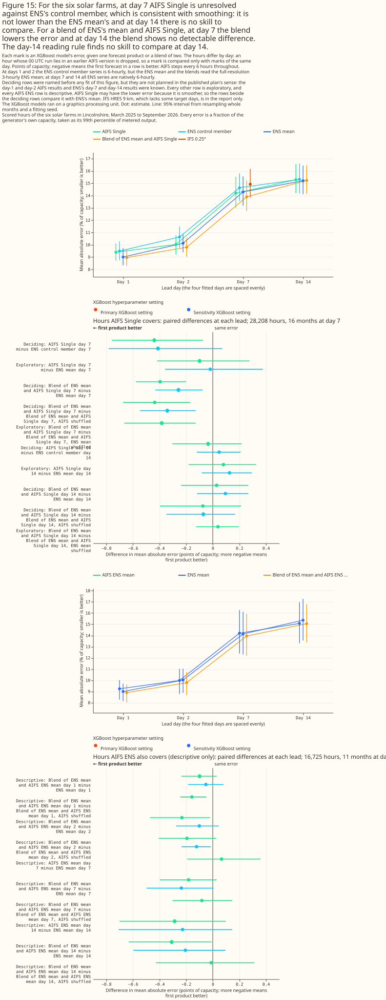
Figure 15: For the six solar farms, at day 7 AIFS Single is unresolved against ENS's control member, which is consistent with smoothing: it is not lower than the ENS mean's and at day 14 there is no skill to compare. For a blend of ENS's mean and AIFS Single, at day 7 the blend lowers the error and at day 14 the blend shows no detectable difference. The day-14 reading rule finds no skill to compare at day 14.
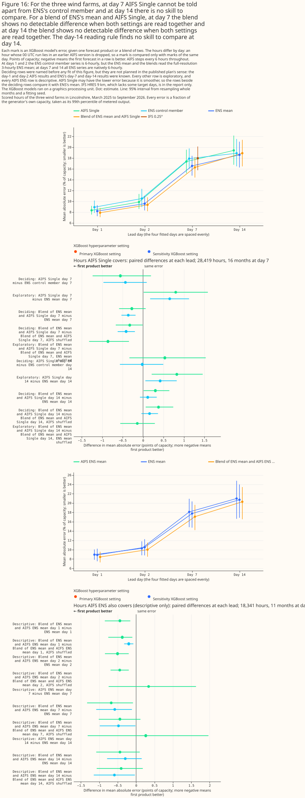
Figure 16: For the three wind farms, at day 7 AIFS Single cannot be told apart from ENS's control member and at day 14 there is no skill to compare. For a blend of ENS's mean and AIFS Single, at day 7 the blend shows no detectable difference when both settings are read together and at day 14 the blend shows no detectable difference when both settings are read together. The day-14 reading rule finds no skill to compare at day 14.
Discussion: what to use
Each recommendation below is about a product as this study reads it, and rests on an XGBoost model fitted at nine generators in one area. Each paragraph gives the size of the effect beside ENS's own error, and says whether the live lead, which the study did not measure, would strengthen or weaken the verdict. A live service reads ENS at 09:00 UTC. The Previous Runs day-1 lead of UKV, ICON-EU, and IFS 0.25° is probably shorter than the lead a 09:00 UTC service would get from those products, so the live lead would probably make those products look worse than this study does.
For solar, keep the ECMWF ENS ensemble mean as the day-ahead weather input. UKV loses to ENS at a matched lead by +1.242 points of capacity [+0.824, +1.689], and ICON-EU loses by +0.817 points [+0.584, +1.069] (both planned, primary setting). ENS's own day-1 error is 8.766% of capacity, so the UKV and ICON-EU gaps are +14.2% [+9.4%, +19.3%] and +9.3% [+6.7%, +12.2%] of ENS's own error (exploratory shares). The sensitivity setting gives +1.236 [+0.815, +1.686] and +0.832 [+0.619, +1.060], so both verdicts stand. The unmeasured live lead would probably strengthen both verdicts, because it would raise the errors of UKV and ICON-EU. UKV's solar radiation is also the study's own reconstruction from two snapshots. What would change the recommendation: a weather product that beats ENS's day-0 error, which no Previous Runs product did (the closest Previous Runs product, IFS 0.25°, is +0.666 points [+0.462, +0.852] behind, exploratory).
For solar, adding ICON-EU and IFS 0.25° to ENS shows no detectable gain at the conservative lead, so the study gives no reason to ingest a second weather model. The deciding contrast, P4b (planned), is -0.033 points [-0.106, +0.033] at the primary setting and +0.014 [-0.049, +0.068] at the sensitivity setting, which is -0.4% [-1.2%, +0.4%] of ENS's own error (exploratory share). A gain as large as 0.106 points at the primary setting is therefore not excluded, and neither is a loss as large as 0.068 points at the sensitivity setting. Scored on daily means, P4b is -0.097 points [-0.190, -0.016] (exploratory), so a small gain in daily solar energy is possible even though no hourly gain was detected. The optimistic contrast, P4a (planned), is -0.347 points [-0.482, -0.219]. The P4a permutation guard is uninformative, because the P4a control is itself worse than ENS alone by +0.152 points [+0.097, +0.215]. P4a's IFS 0.25° value can also come from a run newer than ENS's 00 UTC run. The study did not test how the live lead would move P4b, so the effect of the live lead on this verdict is unknown. What would change the recommendation: a test that separates a second weather model from a newer ECMWF run, such as a solar blend given ICON-EU alone, which the study fitted for wind only.
For solar, the free GEFS ensemble is not a substitute for ENS. At the same lead, an XGBoost model given GEFS's mean is +1.272 points [+0.937, +1.601] worse than an XGBoost model given ENS's mean (P3, planned, primary setting; +1.259 [+0.927, +1.606] at the sensitivity setting), which is +14.5% [+10.7%, +18.3%] of ENS's own error (exploratory share). GEFS's own error, 10.039% of capacity, is still well below climatology's 14.458%, so GEFS carries real information. GEFS and ENS have the same lead, so the live lead does not change this verdict.
IFS 0.25° is the closest to ENS of the individual products tested, but the study does not show that IFS 0.25° would match ENS in a live service. IFS 0.25° day 1 minus ENS day 1 is +0.036 points [-0.225, +0.296] for solar and +0.003 points [-0.163, +0.186] for wind (exploratory). IFS 0.25°'s Previous Runs lead is shorter than ENS's on most hours, and its day-1 value can come from a 12 or 18 UTC run published after the 09:00 UTC issue time, so both comparisons favour IFS 0.25°.
For wind, keep ENS and do not use UKV. UKV loses to ENS at a matched lead by +0.770 points [+0.460, +1.057] (planned, primary setting), and by +0.697 [+0.371, +0.987] at the sensitivity setting. On an ENS day-1 error of 8.427% of capacity, the gap is +9.1% [+5.5%, +12.5%] of ENS's own error (exploratory share). The unmeasured live lead would probably strengthen this verdict. The study did not test the Met Office's ensemble, the Met Office Global and Regional Ensemble Prediction System for the UK (MOGREPS-UK), so this finding is about UKV as one deterministic run and not about the Met Office's forecasts as a whole. The loss is the same before and after UKV's 2026-01-21 upgrade: +0.772 points [+0.364, +1.145] before and +0.765 [+0.406, +1.065] after (exploratory). The gap also shrinks when the forecasts and measurements are averaged over whole days: the whole-day gap is +0.303 points [-0.119, +0.666], which is no longer statistically significant at the 5% level (exploratory). What would change the recommendation: a comparison that reads UKV at ENS's exact lead, which the Previous Runs archive cannot supply and Open-Meteo's Single Runs archive might.
For wind, ICON-EU is unresolved against ENS, so the study gives no reason to swap ENS for ICON-EU. The upper side of the bracket is +0.169 points [-0.064, +0.384] (P2a, planned, primary setting) and its lower side is +1.112 points [+0.926, +1.305] (P2b), so ICON-EU sits between ENS's day-0 and day-1 errors. The upper end of the P2a interval means that ICON-EU could be up to 0.384 points worse than ENS, which is 4.6% of ENS's own error of 8.427% (exploratory share). On the night hours where the two leads are exactly equal, 00 to 05 UTC, ENS wins by +0.540 points [+0.237, +0.840] (exploratory). Against a single ENS control run, which has no ensemble averaging, ICON-EU is -0.138 points [-0.403, +0.100] (exploratory), so the study cannot separate ICON-EU from one ENS run. ICON-EU's Previous Runs day-1 lead is shorter than the control run's lead on most hours of the day, so the control-run comparison favours ICON-EU. ICON-EU's Previous Runs day-1 lead is also probably shorter than the lead a 09:00 UTC service would get. The unmeasured live lead would therefore probably move ICON-EU towards a "loses" verdict, and would strengthen the case for keeping ENS.
For wind, adding ICON-EU and IFS 0.25° to ENS is the one planned contrast against ENS alone that shows a gain at the conservative lead, and the gain is about 0.2 points of capacity. The deciding contrast, P4b (planned), is -0.184 points [-0.282, -0.087] at the primary setting and -0.197 [-0.311, -0.088] at the sensitivity setting, on an ENS day-1 error of 8.427% of capacity. The primary-setting gain is -2.2% [-3.3%, -1.0%] of ENS's own error (exploratory share). The guard is negative at both settings (-0.148 [-0.266, -0.026] and -0.198 [-0.317, -0.087]). The controls are not significantly worse than ENS alone (exploratory), so the gain comes from the weather of ICON-EU and IFS 0.25° rather than from extra columns. The optimistic contrast, P4a, is -0.656 points [-0.851, -0.472]. The gain is not the same at every generator: at W1 the P4b interval reaches zero (-0.073 [-0.164, +0.005]), at W2 it is -0.179 [-0.309, -0.073], and at W3 it is -0.304 [-0.536, -0.093] (exploratory; each interval covers month-to-month weather and the fitting seed, not differences between generators). The study did not test how the live lead would move P4b, so the effect of the live lead on this verdict is unknown.
A service that ingests one added product would probably get most of the wind gain from ICON-EU (exploratory and post hoc). ICON-EU at day 2 alone, added to ENS, gives -0.169 points [-0.250, -0.090], which is not statistically distinguishable from P4b. Against P4b, ENS plus ICON-EU alone is +0.015 points [-0.033, +0.065], so it could be up to 0.065 points worse than P4b. What would change the recommendation: a different result at more wind generators than the three tested here.
ICON-D2 read at its freshest run has the lowest error of any forecast fitted, but that skill does not carry to day-ahead use (exploratory). A value from a run that started 0 to 3 hours before the hour is not available to a service issuing at 09:00 UTC for the rest of the day. At day 1 ICON-D2 is mid-ranking (error and lead), and ICON-D2's domain does not cover all of Great Britain.
Beyond day 3, keep the ENS mean, and do not treat a day-10 or day-14 forecast as skilled beyond climatology at these farms. At days 5 to 10, every product fitted has a higher error than the ENS mean in the point estimates. At day 14, GEFS, native GFS, and the ENS control member have point estimates within 0.2 points of the ENS mean's for solar, and none of them can be told apart from the ENS mean. IFS 0.25° cannot be told apart from the ENS mean for solar at day 5 (+0.088 [-0.377, +0.575] points). The ENS mean minus climatology is -0.710 [-1.398, -0.064] points for solar and -1.577 [-2.713, -0.460] points for wind at day 7, and the ENS mean's error cannot be told apart from climatology's at day 10 or day 14. What would change the recommendation: a test at more generators, or over more months, than these nine farms and 21 months provide. Every lead-day result is exploratory and fitted at the primary setting only.
For day-ahead use, IFS HRES 9 km and native GFS give no reason to replace the ENS mean. Native GFS has a higher error than the ENS mean at equal lead from day 1 to day 10, and IFS HRES 9 km has a higher error at every lead day fitted (native GFS and IFS HRES 9 km). The study did not check Open-Meteo's processing of IFS HRES against a native archive, so the IFS HRES 9 km result is about the archive as served.
On this evidence a service that reads the ENS mean has no reason to switch to AIFS Single, and no AIFS result shows AIFS Single forecasting worse than the ENS mean. AIFS Single has a lower wind error than ENS's control member at day 1 on 6-hourly steps, and no solar difference is claimable. Against the ENS mean on the same steps AIFS Single is not better, so a service that reads the ENS mean would not gain from AIFS Single on this evidence. The literature we surveyed gave no like-for-like evidence that AIFS improves faster than the physics-based IFS, and each AIFS version is scored separately. Assigned by run date from ECMWF's release pages, this study's rows span AIFS Single v1.0, v1.1, and v2 and AIFS ENS v1 and v2, one version at a time, and the study did not check whether Dynamical.org's archive holds any period backfilled with a later version, so its data cannot measure a rate of improvement. The study did not measure when AIFS ENS is published, so a live service's lead from AIFS ENS is unknown.
A distribution-network planner acting on these recommendations needs answers to two questions the study does not cover. The study is a comparison of archived forecasts scored against past output, and not a test of a live service. Scope lists what else the study does not cover.
- Fetch latency and outage behaviour. Previous Runs values come from an archive, so the study says nothing about how late a live feed arrives or what happens when a second feed is down.
- Licence and cost. The study did not check the licence terms or the cost of any second weather source.
Limitations
What this study cannot separate
A blend's gain cannot be split between a second weather model and a newer run. P4a reads ICON-EU and IFS 0.25° at day 1 and P4b at day 2, so the two contrasts differ in lead and in the age of the run behind each value at once. IFS 0.25°'s day-1 value can come from a 06, 12, or 18 UTC run, all newer than ENS's 00 UTC run. The 12 and 18 UTC runs are published after the 09:00 UTC issue time. P4a's gain (-0.347 points for solar, -0.656 for wind) may therefore reflect newer ECMWF information. Only P4b (-0.033 and -0.184) is a conservative bound.
At the wind farms, a Previous Runs product's gap to ENS may include timing noise and ENS's spatial averaging, and the study cannot say how much (exploratory). Averaging over longer blocks shrinks the wind gaps relative to ENS's own error, but the study cannot say whether timing noise or grid-point sampling accounts for more of the wind gaps (the block-average contrasts). For solar the gaps do not shrink relative to ENS's own error, so the block averages give no support for a timing-noise reading of the solar gaps.
ENS's standing cannot be separated from ensemble averaging. The error given the mean of ENS's members is lower than the error given its single control run, for solar and for wind (the control-run contrast, exploratory). Mean absolute error rewards a smoother forecast, so part of ENS's advantage over each single-run product is averaging rather than weather-model quality. The comparisons against the control run favour the Previous Runs products, whose leads are shorter than the control run's on most hours, so ICON-EU's deficit is probably larger at equal lead and IFS 0.25°'s advantage probably smaller. UKV, a single deterministic run, is behind the control run too, so UKV's loss to ENS is not only ensemble averaging. The study cannot say how much of UKV's loss is ensemble averaging.
ICON's "100 m" wind is not an independent 100 m level. ICON-D2, ICON-EU, and ICON global serve a native 120 m wind rescaled by about 0.98. An XGBoost model treats the rescaled speed exactly as the 120 m speed, so the ICON arms read a wind from a different height than the other products' native 100 m wind. The study cannot say how much of any ICON gap comes from the height.
GEFS against ENS cannot be separated from the two ensembles' spatial sampling. P3 is exact in lead, because both ensembles' 00 UTC runs are read at 09:00 UTC. The two ensembles are not sampled alike, though. ENS is averaged over each generator's H3 cell, GEFS is read at the nearest cell of its own grid, and the two ensembles have different numbers of members. Relative to ENS's own error, the GEFS gap does not shrink as the averaging block lengthens, whereas the wind gaps of the Previous Runs products do (solar +1.272 points [+0.937, +1.601] at 1 hour and +1.300 [+0.925, +1.673] over 1 day; wind +0.858 [+0.598, +1.099] and +0.689 [+0.397, +1.006]). A gap that keeps its share of ENS's error as the block lengthens points away from timing noise (exploratory). The study cannot separate weather-model quality from the sampling differences.
This study fits no XGBoost model given ECMWF's ERA5 reanalysis or Copernicus Atmosphere Monitoring Service (CAMS) data, so the study has no past-weather ceiling. The earlier past-weather studies score ERA5 and CAMS as descriptions of hours that have already happened, and no forecast could have had that information. Without an XGBoost model given either product, the study cannot say how far the best day-ahead forecast lies from perfect weather. The study does report a reference given no weather at all: climatology, whose error is 14.458% of capacity for solar and 18.460% for wind.
What the numbers depend on
The UKV day-1 requirement removes 47.8% and 50.5% of the solar rows of April and May 2026, and 86.8% and 89.4% of the wind rows. The shared rows require UKV's day-1 value, because UKV is a planned product. The study did not investigate why the value is missing. The values are missing from the Open-Meteo Previous Runs feed that the study reads. Unless shown otherwise, the study presumes that the gap lies in that feed and not in the Met Office's forecasts. UKV's day-1 value is missing on 6.8% of the solar candidate rows (2,659 of 39,030) and 11.1% of the wind candidate rows (4,678 of 42,144). The gaps fall on 38 calendar dates between April and June 2026 for solar (16 in April, 18 in May, and 4 in June) and 70 for wind (27, 29, and 14), plus 1 date in 2025 for solar and 2 for wind. For solar, the requirement removes 47.8% of the rows of 2026-04, 50.5% of 2026-05, and 11.1% of 2026-06; for wind, 86.8%, 89.4%, and 47.0%. The removal is nearly uniform across the hours of the day for wind (about 11% each hour) and heaviest at 05 and 06 UTC for solar (12.4% and 12.6%). Every arm is scored on the rows that remain, so spring 2026 is under-represented in every figure on this page. The 8 months after UKV's 2026-01-21 upgrade hold 12,642 solar rows and 10,484 wind rows.
An XGBoost model that never trained on the calendar month scores 20 solar cells and 9 wind
cells. The coverage table has 124 (generator, fold, calendar month) cells for solar, of which 20
are not covered by training data, and 63 for wind, of which 9 are. Every uncovered cell holds a
calendar month that occurs in one year only at that generator, so no other fold can hold the month.
January is a single-year month, because the part-month that straddles UKV's upgrade on 2026-01-21
is dropped. October and November are single-year months too, because the rows run from December
2024 to September 2026 and hold each of October and November once. Two of the 20 uncovered solar
cells, at generator E (August in fold 1, September in fold 2), arise because E's rows cover 19
months, not 21. The uncovered cells hold from 69 to 356 scored rows for solar and from 539 to 729
for wind. raise_on_uncovered_months allows only single-year cells and raises on any other
uncovered cell, so the study scores the single-year cells rather than dropping them. The errors in
those seasons come from an XGBoost model that has not seen the season.
Four facts about the study's inputs limit what the numbers mean.
-
The capacity table is the
effective_capacitytable at version 1, committed on 2026-09-22. The report records the table's version and commit time, and that the study's inputs were built on 2026-09-24, after the commit. A rebuilt table would move every number. -
The GEFS build stops if a run the rows need is missing or incomplete. The build script raises unless every 00 UTC run the rows need holds all 31 members, so a gap in the GEFS download cannot become empty GEFS columns. The September 2026 GEFS month is a partial month, and the build accepts the partial file for that last month only, after the same check that every run the rows need is complete. The report does not print this check.
-
The downloaded GEFS store holds missing 100 m wind values at long leads, which the study does not read. In the store,
wind_u_100mandwind_v_100mare missing (NaN) for some runs from 2026-01-15 onwards, at leads of 16 d 6 h and beyond. The planned arms read leads to 95 h and the extra arms read leads to 366 h, so none of the rows the study reads holds a missing value. The download's README does not list this gap; it was found by reading the store. -
The exploratory arms carry a small share of missing weather values, and the planned arms carry none. The planned arms define the shared rows, so they hold every value. The published exploratory arms are fitted on the same rows with their gaps left as missing values, which XGBoost routes natively. IFS HRES 9 km drops its gap days from the rows instead, and the AIFS arms have rows of their own. For solar the largest shares are 0.83% (KNMI HARMONIE-AROME), 0.35% (ICON-D2), and 0.27% (ICON global); for wind, 1.48% (DMI HARMONIE-AROME) and 0.25% (KNMI HARMONIE-AROME). The extra arms add ICON global at day 5 for solar (0.27%) and DMI HARMONIE-AROME at day 0 for wind (1.24%). IFS HRES 9 km lacks 1.35% to 1.45% of the shared solar rows and 1.07% to 1.20% of the shared wind rows. Every other exploratory arm is at 0.05% or lower. An exploratory contrast involving those arms therefore rests on a slightly different information set from a planned one.
The extra arms rest on inputs the study could not check natively, and the AIFS rows are short.
- Open-Meteo's processing of IFS HRES was not checked against a native archive. The archive holds 919 of 926 run days, so seven run days are gaps, and the arms score the shared hours minus those days. The hourly values at days 5 and 7 are interpolated from 3-hourly and 6-hourly steps, and sites B and D share a source cell, so the two generators' series are identical.
- The day-0 leads of most products are estimated, and native GFS's day 0 ignores publication time. Only ICON-EU's and ICON-D2's day-0 radiation leads were checked against source files, ICON-D2's less cleanly. Every day-0 mark is a nowcast that a live service could not read in advance.
- The AIFS rows span several AIFS versions, and the version dates come from ECMWF's release pages, not from the data or a check for backfilled periods. The 2026-05-12 change to AIFS Single v2 coincides with IFS Cycle 50r1, so an AIFS change cannot be separated from an IFS change. The v2 era holds 4 months.
- Most calendar months have no training row of their own in the AIFS row sets. Of the
(generator, fold, calendar month) cells, 37 of 95 solar cells and 18 of 48 wind cells of the
singlerow set have no training row of their calendar month, and 55 of 65 and 27 of 33 of theensrow set. - AIFS Single's radiation window and wind reading were not checked at days 7 and 14. The offset check cannot discriminate there, because AIFS Single's correlation with ERA5's wind speed is 0.43 at day 7 and 0.15 at day 14.
- The day-14 comparison of AIFS Single with IFS rests on the ENS control member. IFS 0.25° and IFS HRES 9 km are not fitted at day 14, and the control member is the IFS model run as an ensemble with perturbed initial conditions.
- AIFS is read on 6-hourly steps, and hourly IFS 0.25° favours IFS 0.25°. The ENS references use 6-hourly steps for a like-for-like comparison, and the AIFS ENS publication time was not measured.
The rows cover 21 months at 6 solar and 3 wind generators in one trial area, so the sample is small. Neighbouring generators share their weather, so the sample is 21 months of weather rather than 21 months of independent generators. An interval covers month-to-month weather and the fitting seed, and not differences between generators. Each interval resamples the 21 year-months as whole blocks, and all nine generators lie in one small area, so the intervals are probably too narrow. About 1 in 20 exploratory intervals reaches statistical significance at the 5% level by chance, so an isolated exploratory result deserves less weight than a planned one.
Four statistical caveats limit how far the intervals can be trusted.
- No multiplicity correction. The study has 18 planned contrasts (9 for solar and 9 for wind, including the 4 blend guards), the two AIFS day-1 deciding contrasts, which carry their own Bonferroni interval, the eight deciding contrasts of the AIFS blends and days 7 and 14 (four per technology, printed at a 99.375% Bonferroni interval beside the 95% one), and many exploratory contrasts, among them which product carries the wind blend gain, the 00-05 UTC subset, and the result at wind generator W3. No interval is adjusted for the number of comparisons.
- The sensitivity setting is not independent confirmation. It changes the XGBoost hyperparameters and keeps the same rows, folds, and weather. Agreement between the two settings shows only that a verdict does not depend on the hyperparameters.
- The voiding rule reacts to noise. A band is voided when its point estimate is zero or below, which a noisy estimate can reach by chance.
- A shuffled control can carry shuffle noise that its interval does not show, and the P4 blends' second-seed refit found none. Two shuffles of the same AIFS Single weather differ by +0.453 [+0.223, +0.696] points for solar. Two shuffles of the P4 blends' added weather differ by +0.059 [-0.008, +0.125] and +0.039 [-0.021, +0.096] points for solar and by -0.031 [-0.099, +0.031] and -0.013 [-0.087, +0.055] points for wind, at the primary setting, so the P4 guards' verdicts agree across two seeds. The AIFS-blend guards each subtract one shuffled control, and their seed noise was not measured.
One month can move a point estimate a little, and no month reverses one. With each year-month dropped in turn, and no refit, P1a runs from +1.127 to +1.343 points for solar and from +0.713 to +0.871 for wind. P2a runs from +0.769 to +0.870 and from +0.128 to +0.226, P3 from +1.183 to +1.361 and from +0.784 to +0.941, and P4b from -0.042 to -0.009 and from -0.205 to -0.162 (exploratory, primary setting). Every dropped-month estimate keeps the sign of the full-sample estimate. The dropped month still trained the XGBoost models that scored the other months.
Scope
This study says nothing about the skill of any ensemble's spread, about the Met Office's ensemble MOGREPS-UK, about leads beyond day 14, or about generators outside the trial area. The study scores point forecasts, made by an XGBoost model fitted separately for each generator, of hourly solar and wind output at 6 solar and 3 wind generators, at day-ahead leads that depend on each Previous Runs product's run cycle, at exact leads for ENS and GEFS, and, in exploratory arms, at days 0, 5, 7, 10, and 14 for the products listed in the extra arms, and at days 1, 2, 7, and 14 for AIFS. The study says nothing about substation demand, and because it scores generators and not substations, it does not show how the gaps carry into a forecast summed over a substation's generators. The study gives the XGBoost model ENS's mean and none of ENS's spread, so the uncertainty information in ENS is unused. The study says nothing about a forecast issued at any time other than 09:00 UTC, apart from the exploratory day-0 arms, which read the freshest run (ICON, UKV, native GFS, and the other Previous Runs products) or the 00 UTC run of the hour's own day (ENS, GEFS, and IFS HRES 9 km). The study also says nothing about the values an Open-Meteo archive would have served live rather than as a Previous Runs value. The study does not test any product's grid, physics, or resolution as a cause of a gap, and it does not test the live service.
Data and code availability
Most inputs are public, but the generator telemetry and the capacity table are private. The
public inputs are ECMWF ENS (from 2024-04-01), NOAA GEFS (from 2020-10-01), NOAA's native GFS store,
and ECMWF's AIFS Single and AIFS ENS from Dynamical.org, and the Previous Runs values and the IFS
HRES Single Runs archive of Open-Meteo. Open-Meteo's day-offset archive starts on 2024-01-19 for
ICON-EU and ICON-D2, on 2024-03-06 for IFS 0.25°, and on 2024-08-06 for UKV (start dates from the
weather-products survey). Dynamical.org's access ends
on 2026-09-30. The generator telemetry and the effective_capacity table are private, because a
single generator's output can be commercially sensitive.
The code is in the repository, at a fixed commit and with fixed XGBoost settings. The scripts
under studies/nwp_forecast_comparison/ and the shared code under packages/studies/ last changed
at commit 1e5ec75acbba956c4c6bd2d7efd3102c9417c3b4. The XGBoost version is 3.4.1. The primary
setting has a maximum depth of 6, a learning rate of 0.05, 500 boosting rounds, a row subsample of
0.8, a minimum child weight of 20, and an L2 penalty of 1. The sensitivity setting has a maximum
depth of 4, a learning rate of 0.03, 1,200 rounds, a row subsample of 0.8, a minimum child weight of
50, and an L2 penalty of 5. Both settings use the absolute-error objective, no column subsampling,
and the seeds 0, 1, and 2. Every extra and AIFS fit uses the primary setting on a GPU, and the AIFS
deciding pair, every deciding contrast of the blends fit, and every AIFS pair near the 5% line are
also fitted at the sensitivity setting, and the P4 refit is fitted at both settings.
The outputs of the extra arms are in seven write-once folders. Batches 1 to 4 write to
data/studies/nwp_forecast_comparison_leads_day10, ..._day10b, ..._day10c, and ..._day10d,
the day-1 and day-2 AIFS arms write to data/studies/nwp_forecast_comparison_aifs, the AIFS
blends and the day-7 and day-14 AIFS arms write to data/studies/nwp_forecast_comparison_aifs_blends,
and the GPU refit of the P4 blends with two shuffle seeds writes to
data/studies/nwp_forecast_comparison_p4_seeds. Each folder holds the extra
inputs, the losses and predictions, report.md, and a verification/ directory. The folder
data/studies/nwp_forecast_comparison_leads holds an earlier run of batch 1's arms, and the charts
and tables do not read it.
Reproducing this page
Every number on this page comes from one of eight report.md files or the verification/ files
beside them, or is derived from them, except the three the page marks in place (the GEFS store's
missing long-lead wind, the day-by-day coverage shares in the lead-day table, and the repeat of the
23 GPU arms), and the commands below rebuild the reports and the figures. The eight files are the
published run's, one for each of the four extra-lead batches, the day-1 and day-2 AIFS arms', the
AIFS blends and long leads', and the P4 refit's. Run the commands
from the repository root, in this order. The verification scripts write the verification/
directories that the reports quote.
P=data/studies/nwp_forecast_comparison
D1=data/studies/nwp_forecast_comparison_leads_day10
D2=data/studies/nwp_forecast_comparison_leads_day10b
D3=data/studies/nwp_forecast_comparison_leads_day10c
D4=data/studies/nwp_forecast_comparison_leads_day10d
A=data/studies/nwp_forecast_comparison_aifs
AB=data/studies/nwp_forecast_comparison_aifs_blends
PS=data/studies/nwp_forecast_comparison_p4_seeds
R=studies/nwp_forecast_comparison
# The published run
uv run python $R/verify_previous_runs_leads.py --output-dir $P/verification
uv run python $R/check_input_steps.py --output-dir $P/verification
uv run python $R/build_forecast_inputs.py
uv run python $R/nwp_forecast_comparison.py
uv run python $R/nwp_forecast_comparison.py --report-only
# Batch 1: extra lead days and day 0
uv run python $R/verify_extra_leads.py --output-dir $D1
uv run python $R/build_forecast_inputs.py --extra-leads --published-dir $P --output-dir $D1
uv run python $R/fit_extra_leads.py --check --published-dir $P --output-dir $D1
uv run python $R/fit_extra_leads.py --published-dir $P --output-dir $D1 --workers 2
# Batch 2: more ENS and GEFS days, and GPU refits of the published arms
uv run python $R/build_forecast_inputs.py --extra-leads --batch second --published-dir $P --output-dir $D2
uv run python $R/fit_extra_leads.py --batch second --published-dir $P --output-dir $D2 \
--context-dir $D1
# Batch 3: native GFS
uv run python $R/verify_gfs_native.py --output-dir $D3
uv run python $R/build_forecast_inputs.py --extra-leads --batch third --published-dir $P --output-dir $D3
uv run python $R/verify_gfs_native.py --output-dir $D3 --built-dir $D3
uv run python $R/fit_extra_leads.py --batch third --published-dir $P --output-dir $D3 \
--context-dir $D1 --context-dir $D2
# Batch 4: IFS HRES 9 km
uv run python $R/verify_ifs_single.py --output-dir $D4
uv run python $R/build_forecast_inputs.py --extra-leads --batch fourth --published-dir $P --output-dir $D4
uv run python $R/verify_ifs_single.py --output-dir $D4 --built-dir $D4
uv run python $R/fit_extra_leads.py --batch fourth --published-dir $P --output-dir $D4 \
--context-dir $D1 --context-dir $D2
# AIFS Single and AIFS ENS
uv run python $R/verify_aifs_steps.py --published-dir $P --output-dir $A
uv run python $R/build_forecast_inputs.py --aifs --published-dir $P --output-dir $A
uv run python $R/verify_aifs_steps.py --published-dir $P --output-dir $A --wiring
uv run python $R/fit_aifs.py --check --published-dir $P --output-dir $A
uv run python $R/fit_aifs.py --published-dir $P --output-dir $A
# AIFS blends, days 7 and 14, and the P4 second-seed refit
uv run python $R/build_forecast_inputs.py --aifs --aifs-days 1 2 7 14 --published-dir $P \
--output-dir $AB
uv run python $R/verify_aifs_steps.py --published-dir $P --output-dir $AB
uv run python $R/verify_aifs_steps.py --wiring --published-dir $P --output-dir $AB
uv run python $R/fit_aifs.py --blends --check --published-dir $P --output-dir $AB
uv run python $R/fit_aifs.py --blends --workers 1 --published-dir $P --output-dir $AB
uv run python $R/fit_aifs.py --p4-controls --check --published-dir $P --output-dir $PS
uv run python $R/fit_aifs.py --p4-controls --workers 1 --published-dir $P --output-dir $PS
# Figures
uv run python $R/nwp_forecast_charts.py --input-dir $P --extra-dir $D1 --extra-dir $D2 \
--extra-dir $D3 --extra-dir $D4 --aifs-dir $A --output-dir docs/studies/assets
uv run python $R/nwp_forecast_charts.py --aifs-blends-dir $AB --output-dir docs/studies/assets
The third command writes solar_forecast_inputs.parquet and wind_forecast_inputs.parquet under
data/studies/nwp_forecast_comparison/. The fourth command fits every arm and saves
<domain>_losses.parquet and <domain>_predictions.parquet there. The fifth command rewrites
report.md from the saved losses without fitting again. In each batch, the build writes the extra
inputs on the published inputs' own (site, time) keys, and --check fits one arm at one generator
twice on a GPU and stops unless the two runs agree. Each later batch takes one --context-dir for
each earlier batch whose arms its contrasts name. Batches 3 and 4 run their verification script
before the build and again, with --built-dir, after it. The AIFS commands check AIFS Single's
radiation window, wind reading, units, and grid orientation, build the AIFS columns, check the
wiring, and fit. The blends commands do the same at days 1, 2, 7, and 14, and the P4 commands refit
the published blends on the GPU with two shuffle seeds. The last chart command draws only the two
AIFS lead charts (Figures 15 and 16). Every extra folder is write-once: the scripts refuse to
overwrite it, and never write to the published folder. The chart script runs npx svgo@4 --multipass
--precision=1 --final-newline on every SVG it writes, reads every folder, and runs last.
The inputs are on disk and cannot all be downloaded again. The build reads the finished GEFS
download in data/studies/weather/GEFS_window_2024-11-01_None/, each Previous Runs product's
combined.parquet, and the native GFS, IFS HRES 9 km, and AIFS downloads under
data/studies/weather/. Dynamical.org's access ends on 2026-09-30. Every worktree writes to the
main checkout's data/studies/, so move the saved outputs to superseded/ before re-running
the fourth command.